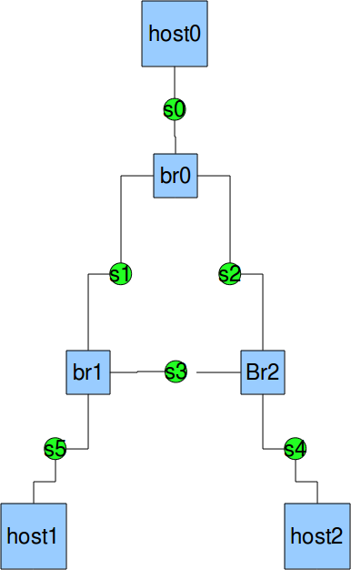

{kind=link}

The most appropriate way to start or stop any daemon in linux is to use the start-stop-daemon wrapper. Its usage can be investigated via
$ start-stop-daemon --help $ man start-stop-daemon
Note (07/08/2013): Any arguments given after ' -- ' on the command line are passed unmodified to the program being started by the start-stop-daemon command. If we start uml_switch directly, we need to redirect its input and output to /dev/null. Otherwise, the xterm will behave strangely, such as: Copy and paste functionality does not work, some of the characters of the string you typed on the keyborad will be eaten.
$ start-stop-daemon --start --quiet --background --pidfile /tmp/Switch0.pid \
--make-pidfile --exec /usr/bin/uml_switch -- -unix /tmp/umlSwitch0.cfg -hub
$ ls -l /tmp
total 24
drwx------ 2 root root 16384 Nov 15 2011 lost+found
drwx------ 2 hsu hsu 4096 Jul 8 20:35 ssh-L3RJq0EgwqyX
-rw-r--r-- 1 hsu hsu 5 Jul 8 20:43 Switch0.pid
srwxr-xr-x 1 hsu hsu 0 Jul 8 20:43 umlSwitch0.cfg
$ more /tmp/Switch0.pid
6237
$ ps l -C uml_switch
F UID PID PPID PRI NI VSZ RSS WCHAN STAT TTY TIME COMMAND
4 111 3168 1 20 0 4224 352 ? S ? 0:00 /usr/bin/um
0 1000 6237 1 20 0 4224 352 - S ? 0:00 /usr/bin/um
Note: (08/07/2013) We export host /src3/tmp directory to
gv kvm (via -fsdev option while starting gv), and mount it to /var/tmp. We then
mount /var/tmp directory in gv to /var/tmp/TcpLog (via
hostfs). The tcpdump command on sniffer will write its log messages to the
files: /var/tmp/TcpLog/$hostname-eth${COUNT}-`date +%H%M`.dmp.
Hopefully, after shutting down gv, we still can see these files in the physical
host's /src3/tmp directory. These tcpdump log files may be examined via the next
command:
$ tcpdump -tttt -r /src3/tmp/sniffer1-0857.dmp
-r Read packets from file (which was created with the -w option).
Standard input is used if file is "-".
-tttt Print a timestamp in default format proceeded by date on each dump line.
For the creation of an absolute minimal UML root filesystem manually, please follow this anchor.
The shell srcipt MakingMinimalUmlRfs.sh will take care of everything,
MakeDevNodes.sh will create needed device files in dev
directory. The initScripts directory has all init related
shell scripts or configuration files. We also need about 20 or more shared
object libraries from our physical host's /lib/x86_64-linux-gnu
directory.
$ MakingMinimalUmlRfs.sh $HOME/UmlRfs
$ linux.uml mem=128M rootfstype=hostfs rootflags=$HOME/UmlRfs
.
.
.
Please press Enter to activate this console.
BusyBox v1.20.2 (Debian 1:1.20.0-8.1) built-in shell (ash)
Enter 'help' for a list of built-in commands.
/ # halt -f
System halted.
# When booting uml this way, unkown "parameter=value" pairs will be stored in
# environment variables
$ linux.uml mem=128M rootfstype=hostfs rootflags=$HOME/UmlRfs Eth0=192.168.1.200 Bmask=0.0.0.255
.
.
.
Please press Enter to activate this console.
/ # env
USER=root
HOME=/
TERM=vt102
PATH=/sbin:/usr/sbin:/bin:/usr/bin
SHELL=/bin/sh
Bmask=0.0.0.255
PWD=/
mem=128M
Eth0=192.168.1.200
/ # halt -f
reboot: System halted
For more information: 9psetup From QEMU
Note: (11/28/2013) Fix 9p Bug (Linux 3.11) Note: (01/18/2014) On Linux 3.12, don't need to fix this bug anymore. But, I will keep the related message for reference purpose.
Note: (11/28/2013) For Linux 3.12, we must add the next line to
the end of /etc/fstab file and reboot the system so that linux.uml
can be booted properly.
shm /dev/shm tmpfs nodev,nosuid 0 0
$ cd /src4/ceph/OpenFlow/openvswitch/bin
# $ vhostOn.sh
# In start-gv-10-Virtio script, from Line 12 to Line 21, we turn on vhost_net.
# At the end of start-gv-10-Virtio script, we append the two substrings:
# -fsdev local,id=fsdev0,path=/usr/local,security_model=none,readonly -device \
# virtio-9p-pci,fsdev=fsdev0,mount_tag=UsrLocal \
# -fsdev local,id=fsdev1,path=/src3/tmp,security_model=none -device \
# virtio-9p-pci,fsdev=fsdev1,mount_tag=TcpLog&
$ start-gv-10-Virtio
# Remote login gv
$ sudo mount -t 9p -o trans=virtio [--read-only] UsrLocal /usr/local
$ sudo mount -t 9p -o trans=virtio TcpLog /src3/tmp
# We need to create /src3/tmp directory, first. Otherwise, see the following message.
# $ sudo mount -t 9p -o trans=virtio TcpLog /src3/tmp
mount: mount point /src3/tmp does not exist
# Available mount_tag are stored in /sys/bus/virtio/drivers/9pnet_virtio/virtio[12]/mount_tag
# $ od -c /sys/bus/virtio/drivers/9pnet_virtio/virtio1/mount_tag
0000000 U s r L o c a l \0 \0
0000012
# $ od -c /sys/bus/virtio/drivers/9pnet_virtio/virtio2/mount_tag
0000000 T c p L o g \0 \0
0000010 \0
0000021
$ diff start-gv-10-Virtio start-gv-10-Virtio.orig
12,29d11
< lsmod | grep vhost_net >/dev/null
<
< if [ $? != 0 ]
< then sudo modprobe vhost_net
< fi
<
< if [ ! -w /dev/vhost-net ]
< then echo "/dev/vhost-net no write permission, will grant it."
< sudo chmod 666 /dev/vhost-net
< fi
<
< if [ ! -d /src3/tmp ]
< then sudo mkdir /src3/tmp
< sudo chown `whoami`:`whoami` /src3/tmp
< else
< sudo rm -rf /src3/tmp/*
< fi
<
44,48c26
< file=../IMGs/Deb-Virtio.img,if=virtio \
< -fsdev local,id=fsdev0,path=/usr/local,security_model=none,readonly -device \
< virtio-9p-pci,fsdev=fsdev0,mount_tag=UsrLocal \
< -fsdev local,id=fsdev1,path=/src3/tmp,security_model=none -device \
< virtio-9p-pci,fsdev=fsdev1,mount_tag=TcpLog&
---
> file=../IMGs/Deb-Virtio.img,if=virtio &
$ cat vhostOn.sh
#! /bin/bash
if [ $EUID -ne 0 ]
then sudo echo "Super User passwd, please:"
if [ $? -ne 0 ]
then echo "Sorry, need su privilege!"
exit 1
fi
fi
sudo modprobe vhost-net
sudo chmod 666 /dev/vhost-net
For the 9pfs sharing options, see "-fsdev" syntax.
Note (07/07/2013): From the physical host, via 9pfs, we can share /src3/UML/uml_root with kvm guest by mounting it on /home/hsu/uml_root, and UML instance can be successfully booted. But, some command, such as ls behaves strangely. It even caused kvm to lockup on error message: Bug: soft lockup. We need to create a local UML root in kvm guest and use it to successfully boot any UML instance.
From the physical host, we may share software directories with kvm guests via 9p filesystem, but not uml root filesystem. This assertion may be verified via the next example:
# Login in gv $ xs gv # Inside gv, compare the next two files: $ diff SimpNet.sh TestNet.sh 25a26,31 > if [ ! -d /home/hsu/uml_root/bin ] > then echo "/home/hsu/uml_root not yet mounted" > sudo mount -t 9p -o trans=virtio UmlRootFs /home/hsu/uml_root > ls -l /home/hsu/uml_root > fi > 37c43 < rootflags=/home/hsu/UmlRfs rw host=uml1 umid=uml1 \ --- > rootflags=/home/hsu/uml_root rw host=uml1 umid=uml1 \ 45c51 < rootflags=/home/hsu/UmlRfs rw host=uml2 umid=uml2 \ --- > rootflags=/home/hsu/uml_root rw host=uml2 umid=uml2 \
We may start simple net via TestNet.sh successfully, but while executing "ls -l", uml1 or uml2 behaves strangely.
$ screen -lsResume each screen session $ifconfig eth0 10.0.0.?hostA: 10.0.0.1 hostB: 10.0.0.2 hostC: 10.0.0.3 |
In the following, we outline the way to adopt our NetLab inside gv, a virtual machine powered by kvm. The benefits are four-folds:
$ cd /src4/ceph/OpenFlow/openvswitch/bin/
$ start-gv-10-Virtio # Hopefully, gv kvm will be ready.
$ xs gv # gv IP: 192.168.0.245
gv:~$ sudo apt-get install screen # We need to run linux.uml detached from its console.
gv:~$ ls -l Simp*
-rwxr-xr-x 1 hsu hsu 1358 Jul 12 09:22 SimpNet.sh
-rwxr-xr-x 1 hsu hsu 562 Jul 12 10:36 SimpNetHalting.sh
gv:~$ cat SimpNet.sh
#! /bin/bash
if [ $EUID -ne 0 ]
then sudo echo "Super User passwd, please:"
if [ $? -ne 0 ]
then echo "Sorry, need su privilege!"
exit 1
fi
fi
if [ ! -d /tmp/switches ]
then mkdir /tmp/switches
fi
if [ -S /tmp/switches/Switch0.sock ]
then echo "Socket /tmp/switches/Switch0.sock exists, kill uml_switch first"
pkill -f "uml_switch -unix /tmp/switches/Switch0.sock"
fi
if [ ! -f /usr/local/bin/linux.uml ]
then echo "/usr/local not yet mounted"
sudo mount -t 9p -o trans=virtio UsrLocal /usr/local
sudo mount -t 9p -o trans=virtio TcpLog /var/tmp
fi
echo "Starting Simple Network"
# Switch
# uml_switch -unix /tmp/switches/1 -hub -daemon </dev/null >/dev/null
start-stop-daemon --start --quiet --background \
--pidfile /tmp/switches/Switch0.pid --make-pidfile --exec \
/usr/bin/uml_switch -- -unix /tmp/switches/Switch0.sock -hub
# Host A
screen -S hostA -d -m linux.uml mem=128M rootfstype=hostfs \
rootflags=/home/hsu/UmlRfs rw host=hostA umid=hostA \
eth0=daemon,,unix,/tmp/switches/Switch0.sock \
IP0=10.0.0.1 NMK0=255.255.255.0 \
IPS=0 role=host \
con=xterm con0=fd:0,fd:1 &
# Host B
screen -S hostB -d -m linux.uml mem=128M rootfstype=hostfs \
rootflags=/home/hsu/UmlRfs rw host=hostB umid=hostB \
eth0=daemon,,unix,/tmp/switches/Switch0.sock \
IP0=10.0.0.2 NMK0=255.255.255.0 \
IPS=0 role=host \
con=xterm con0=fd:0,fd:1 &
# Host C
screen -S hostC -d -m linux.uml mem=128M rootfstype=hostfs \
rootflags=/home/hsu/UmlRfs rw host=hostC umid=hostC \
eth0=daemon,,unix,/tmp/switches/Switch0.sock \
IP0=10.0.0.3 NMK0=255.255.255.0 \
IPS=0 role=host \
con=xterm con0=fd:0,fd:1 &
gv:~$ cat SimpNetHalting.sh
#! /bin/sh
uml_mconsole hostA sysrq s; uml_mconsole hostA sysrq u; uml_mconsole hostA sysrq e; uml_mconsole hostA halt
uml_mconsole hostB sysrq s; uml_mconsole hostB sysrq u; uml_mconsole hostB sysrq e; uml_mconsole hostB halt
uml_mconsole hostC sysrq s; uml_mconsole hostC sysrq u; uml_mconsole hostC sysrq e; uml_mconsole hostC halt
start-stop-daemon --stop --signal 9 --oknodo --pidfile /tmp/switches/Switch0.pid
echo "uml_switch killed"
if [ -S /tmp/switches/Switch0.sock ]
then echo "Socket Switch0.sock still exists, rm..."
rm /tmp/switches/Switch0.sock
if [ -f /tmp/switches/Switch0.pid ]
then rm /tmp/switches/Switch0.pid
fi
# Using SimpNet.sh to start hostA, hostB and hostC, three uml instances.
# From any host xterm, xs gv to ssh into gv
$ xs gv
gv:~$ screen -ls
There are screens on:
2146.uml2 (07/12/13 13:24:14) (Detached)
2145.uml1 (07/12/13 13:24:14) (Detached)
2 Sockets in /var/run/screen/S-hsu.
# Resume the 2146.uml2 'screen' session.
gv:~$ screen -R 2146.uml2
/ # env
IPS=0
USER=root
IP0=10.0.0.2
host=uml2
NMK0=255.255.255.0
HOME=/
TERM=vt102
role=host
PATH=/sbin:/usr/sbin:/bin:/usr/bin
SHELL=/bin/sh
PWD=/
mem=128M
/ # ifconfig -a ;; Notice eth0 has no IP address yet.
/ # ifconfig eth0 10.0.0.2
# Resume the 2145.uml1 'screen' session.
# Using env to check its IP and other environment variable assignments.
# ifconfig eth0 interface similar to the above session.
/ # ping -c 3 10.0.0.1
PING 10.0.0.1 (10.0.0.1): 56 data bytes
64 bytes from 10.0.0.1: seq=0 ttl=64 time=0.259 ms
64 bytes from 10.0.0.1: seq=1 ttl=64 time=0.505 ms
64 bytes from 10.0.0.1: seq=2 ttl=64 time=0.438 ms
--- 10.0.0.1 ping statistics ---
3 packets transmitted, 3 packets received, 0% packet loss
round-trip min/avg/max = 0.259/0.400/0.505 ms
/ # ping -c 3 10.0.0.2
PING 10.0.0.2 (10.0.0.2): 56 data bytes
64 bytes from 10.0.0.2: seq=0 ttl=64 time=0.122 ms
64 bytes from 10.0.0.2: seq=1 ttl=64 time=0.361 ms
64 bytes from 10.0.0.2: seq=2 ttl=64 time=0.245 ms
--- 10.0.0.2 ping statistics ---
3 packets transmitted, 3 packets received, 0% packet loss
round-trip min/avg/max = 0.122/0.242/0.361 ms
# Detaching from 2146.uml2 will close the UML and gv login sessions,
# but uml is still running.
gv:~$ screen -D 2146.uml2
gv:~$ screen -ls
There are screens on:
2145.uml1 (07/12/13 14:50:01) (Attached)
2146.uml2 (07/12/13 14:50:01) (Detached)
2 Sockets in /var/run/screen/S-hsu.
hsu@gv:~$ cat UmlRfs/etc/rc.local
#!/bin/sh -e
#
# rc.local
#
# This script is executed at the end of each multiuser runlevel.
# Make sure that the script will "exit 0" on success or any other
# value on error.
#
# In order to enable or disable this script just change the execution
# bits.
#
# By default this script does nothing.
mount none /var/tmp/TcpLog -t hostfs -o /var/tmp
echo "I am executing rc.local... " >/tmp/rc.local.log
exit 0
# It seems the above script need to be executed by hand, and we got the error:
# getty: setsid: Operation not permitted, setsid: runs a program in a new session.
# Note (08/16/2013): Need to start rc.local in rcS and start getty from inittab.
# Add the following few lines to rcS
# If rc.local exists, must invoke it. Otherwise, it won't be invoked automatically.
if [ -x /etc/rc.local ]
then /etc/rc.local
else
echo "File /etc/rc.local does not exist or is not executable."
fi
# We had tried to add getty in inittab in vain. Add a virtual console, but can not login!
# Hence, disable it. Notice that label tty1 in column 1 must be identcal to device tty1.
# tty1:2345:respawn:/bin/getty 38400 tty1
Starting and halting scripts: NewNet2.sh HaltNewNet2.sh
Resume each screen session via "$ screen -R $PID.uml[1-3]". On each host, there is exactly one unreachable IP. Turn on the IP Forwarding capability on the three hosts, all the IP addresses are then reachable.
# echo "1" >/proc/sys/net/ipv4/ip_forward
See also Net2 and Net3 Source.
When using UML to create network lab, our uml vms need to have statically linked quagga daemons and tcpdump, since our minimized uml root filesystem has only a few shared object libraries installed.
The sniffers need to run tcpdump command to gather network packets.
$ ls -l /usr/lib/x86_64-linux-gnu/libpcap.a
LDFLAGS = -------------------- LDFLAGS = -static LIBS = -L/usr/lib/x86_64-linux-gnu -lpcap ------------------------------------------------------------ LIBS = -lcrypt -L/usr/lib/x86_64-linux-gnu -lpcap -ldl -lz $ file tcpdump tcpdump: ELF 64-bit LSB executable, x86-64, version 1 (GNU/Linux), statically linked, \ for GNU/Linux 2.6.32, ...
Or formally create objects/myconf file:
#!/bin/bash LDFLAGS=-static LD=ld.gold LIBS="-lcrypt -L/usr/lib/x86_64-linux-gnu -lpcap -ldl -lz " export LD LDFLAGS LIBS ../configure --prefix=/src3/NetLab/QuaggaRfs/usrThis way, we get statically linked tcpdump executable. Also, a lot of warning messages, such as: Using 'getrpcbynumber' in statically linked applications requires at runtime the shared libraries from the glibc version used for linking
$ ldd tcpdump not a dynamic executable
$ file tcpdump tcpdump: ELF 64-bit LSB executable, x86-64, version 1 (GNU/Linux), statically linked, \ for GNU/Linux 2.6.32, BuildID[sha1]=28e8e8a59479a39c0dbfb0622bf6a05bcd0dc0ce, not \ stripped $ ldd tcpdump not a dynamic executable
quagga website quagga download Reference.
Note: (07/18/2013) We should recreate Debian Quagga Source as follow: Get Debian Source
# Add the following line to /etc/apt/sources.list deb-src http://free.nchc.org.tw/debian sid main contrib $ sudo apt-get update $ sudo apt-get source quagga $ sudo apt-get build-dep quagga
Note: (09/06/2013) Probably, we need to use the statically linked getpwnam,
getgrnam functions. Otherwise, we will see the error message: "could not lookup
user quagga" issued in the lib/privs.c, a quagga source file, while
starting quagga. These functions are available in the static c library libc.a,
(/usr/lib/x86_64-linux-gnu/libc.a), hence we must add -lc option at
the end of LIBS macro definition. Note: (11/01/2013) Actually, after
modifying the nsswitch (name service switch) configuration file, we resolve the
above problem.
$ diff etc/nsswitch.conf etc/nsswitch.conf.orig 9,11c9,11 < passwd: files < group: files < shadow: files --- > passwd: compat > group: compat > shadow: compat
Note: (02/04/2014) Unfortunately, On new version of quagga, Debian updates its quagga init script: quagga.init.d so that its watchquagga daemon will accept arguments of bash array datatype. Busybox has no such built-in datatype. We must keep on using our own (modified) old quagga.init.sh script. Also, quagga compilation now genetates pure static commands, such as zebra, bgpd, etc. Still, we need 12 (including symlinks) share object libraries.
$ ls -l initScripts/quagga.init* -rwxr-xr-x 1 hsu hsu 7803 Feb 4 15:04 initScripts/quagga.init.sh -rwxr-xr-x 1 hsu hsu 9647 Feb 2 17:07 initScripts/quagga.init.sh.new -rwxr-xr-x 1 hsu hsu 9353 Feb 2 16:33 initScripts/quagga.init.sh.orig
$ find .. -name "debian.conf*" ../UmlRfs/usr/etc/debian.conf ../UmlRfs/etc/quagga/debian.conf.new ../UmlRfs/etc/quagga/debian.conf ../QuaggaRfs/usr/etc/debian.conf.new ../QuaggaRfs/usr/etc/debian.conf $ diff ../QuaggaRfs/usr/etc/debian.conf.new ../QuaggaRfs/usr/etc/debian.conf 24c24 < watchquagga_options=(--daemon) --- > watchquagga_options="--daemon"
# We need libz.a
$ sudo apt-get install zlib1g-dev
# rm the quagga downloaded files and ls -l quagga* directory
$ mkdir /tmp/quagga
$ cd quagga*
$ find . -print | cpio -pdm /tmp/quagga
$ cd /tmp/quagga
$ mkdir objects; cd objects
$ emacs myconf
$ chmod 755 myconf
# Note 1: "-lcrypt" and "-lrt" options will be added by configure. The rest are added
# by myself. Must place -ltinfo after -lreadline. Otherwise, tputs, tgetstr
# would become undefined reference symbols.
# Add -all-static option after the $(LINK) macro on every Makefile so that the
# executable programs will be linked with static libraries.
# $(LINK) -all-static $(vtysh_OBJECTS) $(vtysh_LDADD) $(LIBS)
# $(ospfclient_LINK) -all-static $(ospfclient_OBJECTS) $(ospfclient_LDADD) $(LIBS)
$ cat myconf
#!/bin/bash
LD=ld.gold
LDFLAGS=-static
LIBS="-lcap -lncurses -lpam -lpamc -lpcre -lreadline -ltinfo -ldl -lz -lc -lm"
export LD LDFLAGS LIBS
../configure --prefix=/src3/NetLab/QuaggaRfs/usr --enable-static --disable-shared \
--disable-pie --enable-vtysh --enable-isisd --enable-vty-group=quaggavty \
--sysconfdir=/etc/quagga --localstatedir=/var/run/quagga
$ myconf
$ make
# Next step usually shouldn't be sudo. But without it, installation fails.
# Also, after it, everything is owned by root. Rather stupid, I know.
# Daemon configuration files get installed in physical host's /etc/quagga, no good!
$ sudo mkdir /etc/quagga; sudo chown hsu:hsu /etc/quagga
$ make install
$ mkdir /src3/NetLab/QuaggaRfs/usr/etc
$ sudo mv /etc/quagga /src3/NetLab/QuaggaRfs/usr/etc
$ ls -l /src3/NetLab/QuaggaRfs/usr/etc
total 4
drwxr-xr-x 2 hsu hsu 4096 Oct 4 13:41 quagga
###############################################################################
# We still need a few files from quagga sources:
# 1. debian/quagga.init.d: The quagga init script.
# 2. debian/quagga.pam: To be placed in etc/pam.d/quagga?
# 3. debian/my/debian.conf: To be placed in etc/quagga/debian.conf
# 4. debian/my/daemons: To be placed in etc/quagga/daemons
# From quagga source directory:
# cp debian/quagga.init.d /src3/NetLab/QuaggaRfs/usr/etc/quagga
# cp debian/quagga.pam /src3/NetLab/QuaggaRfs/usr/etc/
# cp debian/my/debian.conf /src3/NetLab/QuaggaRfs/usr/etc/
# cp debian/my/daemons /src3/NetLab/QuaggaRfs/usr/etc/
###############################################################################
$ cd QuaggaRfs/usr/sbin
$ for com in `ls .`;
do
strace $com 2>&1 | grep -o -e "/lib/x86_64-linux-gnu/.*" >>/tmp/sharedFiles;
done
$ emacs /tmp/sharedFiles&
# replacing ",\ .* strings in /tmp/sharedFiles by null strings
# All the needed shared libraries are:
$ cat /tmp/sharedFiles | sort | uniq | tee /tmp/sharedFiles.uniq
$ cat /tmp/sharedFiles.uniq
/lib/x86_64-linux-gnu/ld-linux-x86-64.so.2
/lib/x86_64-linux-gnu/libc.so.6
/lib/x86_64-linux-gnu/libnsl.so.1
/lib/x86_64-linux-gnu/libnss_compat.so.2
/lib/x86_64-linux-gnu/libnss_files.so.2
/lib/x86_64-linux-gnu/libnss_nis.so.2
$ ls -l /lib/x86_64-linux-gnu/ld-linux-x86-64.so.2
lrwxrwxrwx 1 root root 10 Nov 30 01:00 /lib/x86_64-linux-gnu/ld-linux-x86-64.so.2 -> ld-2.17.so
# The above files are all symbolic links to shared object files. The shared object
# files and symbolic links needed to be copied to ./UmlRfs/lib/x86_64-linux-gnu/
# Copy all related shared object files from host to ./UmlRfs/lib/x86_64-linux-gnu
# directory and symbolic link them to the above named files.
# Also, we need nss (name service switch) package.
$ cd /lib/x86_64-linux-gnu/
$ find -name "libnss*" | cpio -pdm ./UmlRfs/lib/x86_64-linux-gnu/
$ ls -l ./UmlRfs/lib/x86_64-linux-gnu/libnss* | wc -l
12
$ cat ./UmlRfs/etc/nsswitch.conf
# /etc/nsswitch.conf
#
# Copy from host, and delete a few not useful lines.
#
# Example configuration of GNU Name Service Switch functionality.
# If you have the `glibc-doc-reference' and `info' packages installed, try:
# `info libc "Name Service Switch"' for information about this file.
passwd: files
group: files
shadow: files
hosts: files mdns4_minimal [NOTFOUND=return] dns mdns4
networks: files
Note: Probably, we need to fix quagga running environment in UML as the following reference suggested: Quagga on UML. For Shared Object Libraries Management, follow this link.
After "$ make install", The contents of the QuaggaRfs directory under
our home directory would be something as follows:
$ du ../QuaggaRfs/usr 44 ../QuaggaRfs/usr/etc 12 ../QuaggaRfs/usr/include/quagga/ospfapi 88 ../QuaggaRfs/usr/include/quagga/ospfd 360 ../QuaggaRfs/usr/include/quagga 364 ../QuaggaRfs/usr/include 332 ../QuaggaRfs/usr/share/info 64 ../QuaggaRfs/usr/share/man/man1 44 ../QuaggaRfs/usr/share/man/man8 112 ../QuaggaRfs/usr/share/man 448 ../QuaggaRfs/usr/share 5084 ../QuaggaRfs/usr/lib 2896 ../QuaggaRfs/usr/bin 34940 ../QuaggaRfs/usr/sbin 43780 ../QuaggaRfs/usr $ ls -l ../QuaggaRfs/usr/bin total 2892 -rwxr-xr-x 1 hsu hsu 2958423 Jul 24 10:41 vtysh hsu@amd-6:~/Downloads$ ls -l ../QuaggaRfs/usr/sbin total 34936 -rwxr-xr-x 1 hsu hsu 2184468 Jul 24 10:41 babeld -rwxr-xr-x 1 hsu hsu 4448878 Jul 24 10:41 bgpd -rwxr-xr-x 1 hsu hsu 2545368 Jul 24 10:41 isisd -rwxr-xr-x 1 hsu hsu 2734884 Jul 24 10:41 ospf6d -rwxr-xr-x 1 hsu hsu 3441741 Jul 24 15:52 ospfclient -rwxr-xr-x 1 hsu hsu 3472803 Jul 24 10:41 ospfd -rwxr-xr-x 1 hsu hsu 2346588 Jul 24 10:41 ripd -rwxr-xr-x 1 hsu hsu 2227181 Jul 24 10:41 ripngd -rwxr-xr-x 1 hsu hsu 4066897 Jul 24 16:17 tcpdump -rwxr-xr-x 1 hsu hsu 4066897 Jul 24 16:17 tcpdump.4.4.0 -rwxr-xr-x 1 hsu hsu 1651362 Jul 24 15:52 watchquagga -rwxr-xr-x 1 hsu hsu 2567211 Jul 24 10:40 zebra hsu@amd-6:~/Downloads$ ls -l ../QuaggaRfs/usr/etc/quagga total 48 -rw-r--r-- 1 hsu hsu 655 Jul 24 10:41 babeld.conf.sample -rw-r--r-- 1 hsu hsu 566 Jul 24 10:41 bgpd.conf.sample -rw-r--r-- 1 hsu hsu 2801 Jul 24 10:41 bgpd.conf.sample2 -rw-r--r-- 1 hsu hsu 789 Jul 24 10:41 isisd.conf.sample -rw-r--r-- 1 hsu hsu 1110 Jul 24 10:41 ospf6d.conf.sample -rw-r--r-- 1 hsu hsu 182 Jul 24 10:41 ospfd.conf.sample -rw-r--r-- 1 hsu hsu 7225 Oct 4 15:23 quagga.init.d -rw-r--r-- 1 hsu hsu 406 Jul 24 10:41 ripd.conf.sample -rw-r--r-- 1 hsu hsu 390 Jul 24 10:41 ripngd.conf.sample -rw-r--r-- 1 hsu hsu 126 Jul 24 10:41 vtysh.conf.sample -rw-r--r-- 1 hsu hsu 369 Jul 24 10:41 zebra.conf.sample
Since 03/06/2015, we have been offering our own (statically linked) busybox binary in amdm mirror. For the maintenance of this busybox binary, see README.html. We may download it via
$ wget http://amdm/Busybox/busybox_static/bin/busybox
If possible at all, I prefer to get (static) binary package from Debian so that someone maintains it for us. Unfortunately, recently, quality of busybox-static (from Debian) is left a lot to be desired. For example, a lot of options for busybox brctl command were omitted. We may either get static busybox binary via busybox-x86_64. Or we may download its source busybox source and compile it by ourself. After untar the source, read its README file and use the make menuconfig command to configure the source package. We only need to turn on the static binary option (from busybox setting -> build options), since we will run it on minimal UML root filesystem without too many shared object libraries. I checked the whole default menuconfig options rather carefully. It seems the default options provided are rather reasonable!
Note (02/07/2014): This is the first time I encountered this problem. Both the CPUs on ac00 and amd-6 are manufactured by AMD. The kernel modules compiled on individual hosts are not interchangeable. The bridge kernel module will cause ipv6 kernel module to be loaded automatically. On ac00 and amd-6, the ipv6.ko (in kernel/net/ipv6 directory) kernel modules have different sizes. The ipv6.ko kernel module compiled in ac00 can not be loaded in amd-6:
Symbol from_kuid_munged is not defined in ipv6.ko
# On ac00, from_kuid_munged is undefined in ipv6.ko
$ nm /usr/local/lib/uml/lib/mo*/3*/kernel/net/ipv6/ipv6.ko | grep from_kuid
U from_kuid_munged
$ nm ../UmlRfs/lib/mo*/3*/kernel/net/ipv6/ipv6.ko | grep ipv6_dev_get_saddr
0000000000007c1c T ipv6_dev_get_saddr
0000000000000159 r __kstrtab_ipv6_dev_get_saddr
0000000000000130 r __ksymtab_ipv6_dev_get_saddr
# On amd-6, from_kuid_munged does not show up at all!
$ nm /usr/local/lib/uml/lib/mo*/3*/kernel/net/ipv6/ipv6.ko | grep from_kuid
$
Symbol ipv6_dev_get_saddr is defined in ipv6.ko.
At the end of kernel loading, and the first init process is running, init
executes several processes, following instructions from the /etc/inittab file.
The first program got executed is usually /etc/init.d/rcS (run command
in single-user mode) and labelled as sysinit. And in this script, we check
the existence and execution permission of /etc/rc.local (run command for
local environment) and then invoke it.
$ cat initScripts/inittab ::sysinit:/etc/init.d/rcS ::askfirst:-/bin/sh # Add a virtual console, but can not login! Hence, disable it. # Notice that label tty1 in column 1 must be identcal to device tty1. # tty1:2345:respawn:/bin/getty 38400 tty1
Note: (07/13/2013) This file is prepared according to: Busybox Example Inittab.
$ cat initScripts/rcS #!/bin/sh # Mount everything in fstab /bin/mount -a # If rc.local exists, must invoke it, since it won't be invoked automatically. if [ -x /etc/rc.local ] then /etc/rc.local else echo "File rc.local does not exist" fi $ cat initScripts/fstab proc /proc proc defaults 0 0 ramfs /var/lock ramfs defaults 0 0 ramfs /var/log ramfs defaults 0 0 ramfs /var/run ramfs defaults 0 0
To simulate a nontrivial network, constantly, we need to create switches, hubs, hosts, sniffers, routers, etc. And in order to examine all sort of network protocols, often, we need to adjust our network layout. So we need to automate the deployment of our network via shell scripts so that we could easily start, stop and change network layouts. First we make a hostscript to start hosts, switches, routers, etc... The guest script, which is resided in the UML instances, is also needed to automatically configure the UML instances with the right network related information.
Note: (01/22/2014) The command line unknown kernel boot options are
handled by the unknown_bootoption function implemented in
init/main.c file. And they are handed to /bin/init or
/bin/sh by the run_init_process function (via argv_init
and envp_init). In our UmlRfs, both /bin/init and /bin/sh
are symbolic links to /bin/busybox. The kernel booting parameters may also be examined
by issuing the command: "$ cat /proc/cmdline"
In our hostscript, we define all kind of things, such as ip addresses, netmasks, locations, etc. It isn't difficult to do, just define all things in our hostscript via the "name=value" pair strings. All the unknown booting parameters will get stored in the UML's environment. And in the guest script, we can retrieve them by prefixing a dollar sign with their appropriate names. In this way, all these information items would be available in the environment of each UML vm. You can examine all variables by typing printenv or env. Here is an example.
# Command Extracted from NewNet2.sh. StartStopNet: defined in Tools/AStartStopNetFunc # StartStopNet start host uml1 LastEthNo=1 Sw0=sw0 Eth0=10.0.1.1 NMSK0=255.255.255.0 \ # Bcast0=10.0.1.255 Sw1=sw1 Eth1=10.0.2.1 NMSK1=255.255.255.0 Bcast1=10.0.2.255 \ # GW=10.0.1.2 # Message echoed while executing NewNet2.sh # host uml1 started with option: LastEthNo=1 \x5C\x0A\x20 eth0=daemon,,unix,\ # /tmp/switches/sw0.sock Eth0=10.0.1.1 NMSK0=255.255.255.0 Bcast0=10.0.1.255 \ # \x5C\x0A\x20 eth1=daemon,,unix,/tmp/switches/sw1.sock Eth1=10.0.2.1 \ # NMSK1=255.255.255.0 Bcast1=10.0.2.255 . # 5C: \ Escape Quoting, 0A: LF Newline, 20: Spacebar Space . . $ screen -ls There are screens on: 3997.uml4 (01/23/2014 08:54:45 PM) (Detached) 3880.uml3 (01/23/2014 08:54:44 PM) (Detached) 3786.uml2 (01/23/2014 08:54:44 PM) (Detached) 3701.uml1 (01/23/2014 08:54:44 PM) (Detached) 4 Sockets in /var/run/screen/S-hsu. # In another xterm $ screen -R 3701.uml1 Please press Enter to activate this console. / # cat /proc/cmdline rootfstype=hostfs rootflags=/src3/NetLab/UmlRfs/ rw hostname=uml1 role=host \ GW=10.0.1.2 LastEthNo=1 \x5C\x0A\x20 eth0=daemon,,unix,/tmp/switches/sw0.sock \ Eth0=10.0.1.1 NMSK0=255.255.255.0 Bcast0=10.0.1.255 \x5C\x0A\x20 eth1=daemon,,unix,\ /tmp/switches/sw1.sock Eth1=10.0.2.1 NMSK1=255.255.255.0 Bcast1=10.0.2.255 root=98:0 / # printenv USER=root HOME=/ GW=10.0.1.2 NMSK0=255.255.255.0 NMSK1=255.255.255.0 TERM=vt102 PATH=/sbin:/usr/sbin:/bin:/usr/bin RUNLEVEL=\x5C\x0A\x20 SHELL=/bin/sh LastEthNo=1 hostname=uml1 PWD=/ role=host Bcast0=10.0.1.255 Eth0=10.0.1.1 Bcast1=10.0.2.255 Eth1=10.0.2.1 / # echo $role host / # echo $hostname uml1
We can now pass information to a UML instance, but what kind of information do we need to register to our UML instance? Most importantly, the role of the uml instance (, they are host, bridge, router, sniffer, four basic roles). In each role, certain things need to be done, e.g., for a sniffer, we must start tcpdump process. For a router, we need to start quagga daemons. Secondary, information about the network settings, such as the number of virtual ethercards, their IP addresses, gateway, etc. Here is a script that checks if the role of an UML vm isn't a sniffer and then its local network interfaces would be configured according to the information passed from the hostscript.
# Configuring Local Network
echo "Configuring Network"
ip addr add 127.0.0.1/8 dev lo
ip link set lo up
# Configuring Network Cards with IP address and netmask
# But first, check if the uml instance is no sniffer,
# because they need to start another procedure
if [ "$ROLE" != "sniffer" ]; then
echo -e "No promiscuous interface(s)"
i=0
while [ $IPS -ge $i ];
do
eval ifconfig eth$i \$IP$i netmask \$NMK$i
ifconfig eth$i up
#eval ip address add \$IP$i/\$NMK$i brd + dev eth$i
#ip link set eth$i up
i=`expr $i + 1`
done
fi
Eval, a built-in function for almost all sort of shells. It is available in busybox, too. eval
eval - construct command by concatenating arguments. The constructed command shall
be read and executed by the shell
EXAMPLES
foo=10 x=foo
y='$'$x
echo $y
return value: $foo
eval y='$'$x
echo $y
return value: 10
The guest script is a script resided in the UML root filesystem. Its sole purpose
is to configure a UML instance according to its role (, such as router, host, sniffer,
etc.,) and its network arrangement. We have seen above, these information items are
inscribed in its environment variables. Usually, we name this guest script
/etc/rc.local, and after making sure such file does exist and executable,
we invoke it at the end of /etc/init.d/rsC. And the rcS file would be started
in the inittab file. The following anchor provides some UML's
/etc/rc.local file. In the script, you could see the actions that need
to be taken care of for a VM of some particular role.
The hostscript must start/stop things, like hubs, uml instances, bridges, switches, etc., with the right network configuration, such as the number of ethercards, their IP addresses, netmasks, broadcast addresses, gateway. Possible scripts would be presented below with comments.
For the convenience of general public, we decide to accept "default" as a possible netmask and bcast's value assignments, and use the ipcalc tool to figure out the proper values for them:
# If necessary, ipcalc package can be found via next command. # $ apt-cache search ipcalc $ ipcalc 10.0.7.0 -b | grep Netmask: | cut -f4 -d ' ' 255.255.255.0 $ ipcalc 10.0.7.0/20 -b | grep Netmask: | cut -f4 -d ' ' 255.255.240.0 $ ipcalc 10.0.7.0 -b | grep Broadcast: | cut -f2 -d ' ' 10.0.7.255 $ ipcalc 10.0.7.0/20 -b | grep Broadcast: | cut -f2 -d ' ' 10.0.15.255
# Creating uml switch, first.
$ start-stop-daemon --start --quiet --background --pidfile /tmp/switches/Switch0.pid \
--make-pidfile --exec /usr/bin/uml_switch -- -unix /tmp/switches/Switch0.sock -hub
# Connect eth0 to /tmp/switches/Switch0.sock, a socket created above. First, replace
# $UmlRoot in the next command with the pathname of a proper Uml root filesystem.
$ linux.uml rootfstype=hostfs rootflags=$UmlRoot rw host=uml1 umid=uml1 \
eth0=daemon,,unix,/tmp/switches/Switch0.sock IP0=10.0.0.1 \
NMK0=255.255.255.0 IPS=0 ROLE=host \
# con=xterm con0=fd:0,fd:1 & ;; We don't have xterm in UmlRfs, disable xterm console.
# After system prompt "#", type "halt -f" to halt the system.
Usually, in a non-trivial network, we need several hosts, switchs, bridges, routers, sniffers, etc. You could start all instances in xterms and your desktop will be filled in a few seconds with a lot of xterms. I don't like that. A better solutions is to use the command screen to attach all instances to. Screen would detach all xterms you started and you could view them when you want. The following are the sample commands for starting an UML instance with screen, listing all screen instances and resuming a screen session.
screen -S uml1 -d -m linux.uml rootfstype=hostfs rootflags=$UmlRoot/ rw \ host=uml1 umid=uml1 eth0=daemon,,unix,/tmp/switches/Switch0.sock \ IP0=10.0.0.1 NMK0=255.255.255.0 IPS=0 ROLE=host & # List all screens screen -ls # Attach or detach to a screen screen -R <screen-name> screen -D <screen-name> # Often seen screen options: # # -d -m # Start screen in "detached" mode. This creates a new session but doesn't attach # to it. This is useful for system startup scripts. # # -S sessionname # When creating a new session, this option can be used to specify a meaningful # name for the session. This name identifies the session for "screen -list" # and "screen -r" actions. It substitutes the default [tty.host] suffix. # # -d # does not start screen, but detaches the elsewhere running screen session. # It has the same effect as typing "C-a d" from screen's controlling terminal. # # -m # causes screen to ignore the $STY environment variable. With "screen -m" # creation of a new session is enforced, regardless whether screen is called # from within another screen session or not. This flag has a special meaning # in connection with the `-d' option:
You could run multiple uml instances from the same image file by starting them in read-only mode. Then you can change nothing or log no message in the system. So you want write permissions and still running all UML instances from one image file. It can, by using the host file system. On the host, we make a sequence of directories with enough space and mount them (via -t hostfs) in the UML instance. You then could write things in an UML instance and log files could also be generated. Now we need to configure it. In the hostscript we facilitate the directories and in the rcS file we mount the host file system directories in the uml instance. Below is the sample code segment extracted from the hostscript.sh.
Code extracted from the hostscript.sh
# Special Hostfs for logging (won't be removed when uml instances are stopped)
sudo mkdir -p /home/UMLFS/dump
sudo chmod -R 744 /home/UMLFS/dump
sudo chown -R ubuntuxen:ubuntuxen /home/UMLFS/dump
# Loop for making temporary hostfs
while [ $number != $i ]
do
i=`expr $i + 1`
# Configuring Host File System (would be removed when stopping uml instances)
sudo mkdir -p /home/UMLFS/umls/uml$i/var/log
sudo mkdir -p /home/UMLFS/umls/uml$i/var/tmp
sudo mkdir -p /home/UMLFS/umls/uml$i/var/run
sudo mkdir -p /home/UMLFS/umls/uml$i/var/lock
sudo mkdir -p /home/UMLFS/umls/uml$i/tmp
sudo chmod -R 744 /home/UMLFS/umls/uml$i
sudo chown -R ubuntuxen:ubuntuxen /home/UMLFS/umls/uml$i
done
Code in the rcS file
# Mounting Host Filesystem, so you could run multiple instances of UML echo "Configuring Host File System (Writing on the HOST)" /bin/mount none /var/log -t hostfs -o /home/UMLFS/umls/$host/var/log /bin/mount none /var/run -t hostfs -o /home/UMLFS/umls/$host/var/run /bin/mount none /var/tmp -t hostfs -o /home/UMLFS/umls/$host/var/tmp /bin/mount none /var/lock -t hostfs -o /home/UMLFS/umls/$host/var/lock /bin/mount none /tmp -t hostfs -o /home/UMLFS/umls/$host/tmp /bin/mount none /root -t hostfs -o /home/UMLFS/dump
We need a handy script for starting and stopping our network, checking the status of running uml instances, attaching and detaching uml instances to the screen. Here is the possible interface of our script:
# Start a network with UML instances, you can choose it by typing a network. # For network 1 type net1, etcetera. hostscript.sh start # Stop all the network and UML instances hostscript.sh stop # List a screen of detached screens hostscript.sh status # Gives you an option to attach a screen # You must type a number to attach that instance in a screen hostscript.sh attach
A possible but might not be the best implementation will be provided below.
The outer most interface is implemented by this script. It provides the start, stop, status, and attach functionality for our users. It reads the source script hostscript_config.sh for possible networks to start.
Each network, implemented as a function in this script, can be chosen from the last script.
Host and Guest Scripts Source Origin ip address add and IPROUTE2 Utility
Each protocol is in its own section
For each of our (quagga) routers, we automatically start the following three daemons (controlled by /etc/quagga/daemons file) via quagga.init.sh.
For a router, zebra daemon must be started. For more precise control, maybe we should give protocal variables (on command line?) to specify whether the rest daemons will be started or not.
/etc/init.d/quagga.init.sh start
For our bridges, we turn on their stp functionality via
brctl stp $hostname on # Also, we need to load 3 kernel modules before bridge modules: # modinfo bridge filename: kernel/net/bridge/bridge.ko license: GPL version: 2.3 alias: rtnl-link-bridge srcversion: 66F098C1FF8F65B78908341 depends: llc,stp,ipv6 vermagic: 3.12.9 mod_unload
References:
The Routing Information Protocol, also known as the RIP protocol, is used between routers to exchange routing tables. It runs at the network layer of the Internet protocol suite. It uses UDP for transportation. This means that it is unreliable, there is no checking if the intended reciever did actually recieve the information. Originally each RIP router transmits full updates every 30 seconds by default. Back in the early days of RIP, routing tables were small enough that the traffic was not significant.
RIP is a very easy to understand and implement protocol. It is very simple, just plainly sending it's tables in RIP-packets to other RIP routers. This however, shows the drawbacks: malicious users can insert false RIP tables into other RIP routers. For this reason authentication has been added in RIPv2, ironically this authentication is plain text and can be sniffed off the wire. However, this was not part of the experiment, and has not been tested.
Quagga sets up the RIP packets correctly. All the fields are present and the values are correct. This matches the RFC format which is described in section 4.2.1 on page 20. RIPv1 also broadcasts to the whole network, instead of sending it to a special router multicast address (240.0.0.9), which RIPv2 uses.
Also the limit of 15 hops greatly impacts it's deployability in large networks like the internet. It used to work for the much smaller ARPAnet, but in today's Internet it would not last very long. This is the reason it's used within interior networks.
There are a few quirks, especially when using RIPv1, as can be seen in RIP experiment network 2. The missing support for classless routing is making the version 1 totally unusable in this network. There are more situations possible where RIPv1 would be unusable when the network uses classless subnets. RIP version 2 addressed the problem, making these networks reachable and properly operating.
In this scenario, we test RIP, (Router Information Protocol). By default, we enable the zebra, ospfd, and ripd, 3 daemons.
# In a new xterm, cd /src3/NetLab/UmlRfs/etc/quagga $ ls -l daemons debian.conf lrwxrwxrwx 1 hsu hsu 15 Mar 21 21:04 daemons -> daemons.default lrwxrwxrwx 1 hsu hsu 19 Mar 21 21:04 debian.conf -> debian.conf.default # By default, in daemons, we enable zebra, ospfd, ripd, 3 daemons. # more debian.conf . . zebra_options=" -r -k --daemon -A 127.0.0.1" bgpd_options=" --daemon -A 127.0.0.1" ospfd_options=" --daemon -A 127.0.0.1" ospf6d_options=" --daemon -A ::1" ripd_options=" --daemon -A 127.0.0.1" ripngd_options=" --daemon -A ::1" isisd_options=" --daemon -A 127.0.0.1" babeld_options=" --daemon -A 127.0.0.1" . .
# hostname host0 # ip route add default via 192.168.2.1 # route -n Kernel IP routing table Destination Gateway Genmask Flags Metric Ref Use Iface 0.0.0.0 192.168.2.1 0.0.0.0 UG 0 0 0 eth0 192.168.2.0 0.0.0.0 255.255.255.0 U 0 0 0 eth0 # ping -c 3 192.168.4.2 PING 192.168.4.2 (192.168.4.2): 56 data bytes --- 192.168.4.2 ping statistics --- 3 packets transmitted, 0 packets received, 100% packet loss ;;;;;;;;;;;;;;;;;;;;;;;;;;;;;;;; ;; After setting default route 192.168.4.1 for host2, should be able to ping 192.168.4.2 ;;;;;;;;;;;;;;;;;;;;;;;;;;;;;;;; # In the default ripd.conf (ripd configuration file), we didn't enable network eth0, # etc1, and eth2. Hence, there are a lot of Ips unreachable for each host.
Shutdown the network via HaltRipNet-1.sh command.
$ pwd
/src3/NetLab/UmlRfs
$ if [ ! -f etc/quagga/ripd.conf.orig ]
then emacs etc/quagga/ripd.conf
fi
$ mv etc/quagga/ripd.conf~ etc/quagga/ripd.conf.orig
hsu@amd-6:~/UmlRfs$ diff etc/quagga/ripd.conf etc/quagga/ripd.conf.orig
16,18d15
< network eth0
< network eth1
< network eth2
Restart RipNet-1.sh, configure default routes for host0, host1, host2 as above. This time, on host0, we are able to ping 92.168.4.2 successfully.
/etc/init.d/quagga.init.sh restart will
shutdown everything, including the zebra daemon, Gee! When restarting
quagga.init.sh, we must give one more argument, such as: ripd or
ospfd, to prevent the zebra daemon from being shut down
adventitiously.
Finally, we are able to preserve routing table, if we don't shut down zebra daemon. See ReadmeQuaggaInit.html. Try this out by getting a new xterm. On this new xterm
$ screen -R ????.rA # At the new rA console, check its routing table: # route -n Kernel IP routing table Destination Gateway Genmask Flags Metric Ref Use Iface 10.0.0.0 0.0.0.0 255.0.0.0 U 0 0 0 eth1 192.168.1.16 0.0.0.0 255.255.255.240 U 0 0 0 eth2 192.168.1.32 10.0.0.2 255.255.255.240 UG 2 0 0 eth1 192.168.2.0 0.0.0.0 255.255.255.0 U 0 0 0 eth0 192.168.3.0 10.0.0.2 255.255.255.0 UG 2 0 0 eth1 192.168.4.0 192.168.1.18 255.255.255.0 UG 2 0 0 eth2 # /etc/init.d/quagga.init.sh restart ripd # route -n Kernel IP routing table Destination Gateway Genmask Flags Metric Ref Use Iface 10.0.0.0 0.0.0.0 255.0.0.0 U 0 0 0 eth1 192.168.1.16 0.0.0.0 255.255.255.240 U 0 0 0 eth2 192.168.1.32 10.0.0.2 255.255.255.240 UG 2 0 0 eth1 192.168.2.0 0.0.0.0 255.255.255.0 U 0 0 0 eth0 192.168.3.0 10.0.0.2 255.255.255.0 UG 2 0 0 eth1 192.168.4.0 192.168.1.18 255.255.255.0 UG 2 0 0 eth2
This setup also uses one sniffer (see STP), with one interface per hub (switch). When RIP was enabled, you can see the request packets being sent out, and the corresponding responses. The command (2) and version number (1) can be seen in the packets. This matches the packet in the RFC. This packet shows that the router knows 2 networks, and has put them in the packet: 10.0.0.0 and 192.168.1.0. When the network is stabile (convergent), meaning all routers have all known neighbours, host C is aware of all 3 networks, and is able to reach them.
References:
The Open Shortest Path First (OSPF) protocol is a hierarchical interior gateway protocol (IGP) for routing in Internet Protocol, using a link-state in the individual areas that make up the hierarchy. A computation based on Dijkstra's algorithm is used to calculate the shortest path tree inside each area. It is used in large autonomous sytems.
Note: (02/09/2014) After starting the OSPF Network, for each router, (r1
upto r5), must resume its screen session (, via "$ screen -R $router-screen-id"),
to insert kernel module nfnetlink.ko before starting ospfd. For the
ospfd daemon, we also need to specify its configuration file:
/etc/quagga/OSPFCONF/ospfd.$hostname.conf.
Note: (03/14/2015) Only enable zebra in daemons, since ospfd will be started manually.
# In a new xterm $ cd /src3/NetLab/UmlRfs/etc/quagga $ rm daemons debian.conf $ ls -l FromD*/daemons.ospf -rw-r--r-- 2 hsu hsu 991 Mar 14 09:28 FromDebian/daemons.ospf $ ln -s FromDebian/daemons.ospf daemons $ ln -s FromDebian/debian.conf.ospfd debian.conf $ cd ../../../Nets; ls -l *Ospf* lrwxrwxrwx 1 hsu hsu 12 Aug 27 2014 HaltOspfNet.sh -> HaltNet-ASSF -rwxr-xr-x 1 hsu hsu 1589 Feb 9 2014 OspfNet.sh $ OspfNet.sh # After a while, in new xterm, $ screen -R 7395.r1 / # route -n Kernel IP routing table Destination Gateway Genmask Flags Metric Ref Use Iface 10.0.0.0 0.0.0.0 255.255.240.0 U 0 0 0 eth2 10.1.0.0 0.0.0.0 255.255.0.0 U 0 0 0 eth0 10.2.0.0 10.0.0.2 255.255.0.0 UG 20 0 0 eth2 10.3.0.0 10.0.0.3 255.255.0.0 UG 20 0 0 eth2 10.4.0.0 192.168.30.2 255.255.0.0 UG 20 0 0 eth1 10.5.0.0 192.168.30.2 255.255.0.0 UG 30 0 0 eth1 172.16.5.0 10.0.0.3 255.255.255.252 UG 20 0 0 eth2 192.168.30.0 0.0.0.0 255.255.255.252 U 0 0 0 eth1 192.168.30.4 192.168.30.2 255.255.255.252 UG 20 0 0 eth1 # All the IPs are reachable / # /etc/init.d/quagga.init.sh restart ospfd / # route -n Kernel IP routing table Destination Gateway Genmask Flags Metric Ref Use Iface 10.0.0.0 0.0.0.0 255.255.240.0 U 0 0 0 eth2 10.1.0.0 0.0.0.0 255.255.0.0 U 0 0 0 eth0 10.2.0.0 10.0.0.2 255.255.0.0 UG 20 0 0 eth2 10.3.0.0 10.0.0.3 255.255.0.0 UG 20 0 0 eth2 10.4.0.0 192.168.30.2 255.255.0.0 UG 20 0 0 eth1 10.5.0.0 192.168.30.2 255.255.0.0 UG 30 0 0 eth1 172.16.5.0 10.0.0.3 255.255.255.252 UG 20 0 0 eth2 192.168.30.0 0.0.0.0 255.255.255.252 U 0 0 0 eth1 192.168.30.4 192.168.30.2 255.255.255.252 UG 20 0 0 eth1 # End this ospfd session by $ cd /src3/NetLab/UmlRfs/etc/quagga $ rm daemons debian.conf $ ln -s daemons.default daemons $ ln -s debian.conf.default debian.conf
################################################################################## # No need to execute this part anymore. It took a while for the routing tables # to be generated. After that ping each IP with sucess. ################################################################################## # modprobe nfnetlink ;; Or insmod /lib/modules/3.12.9/kernel/net/netfilter/nfnetlink.ko # mkdir /var/log/quagga # chown quagga:quagga /var/log/quagga ;;; ospfd -d -u root -f /etc/quagga/OSPFCONF/ospfd.$hostname.conf # /etc/init.d/quagga.init.sh restart
There are 5 routers. Each router also has an extra interface, with IP address 10.x.0.0/16, where x is the number of the router. A switch or hub must be connected to this interface, otherwise the interface will not come up. I've called these hubs BHubs (Bogus Hubs). As with RIP you need to start the zebra daemon first, before the ospfd daemon. There are 4 networks between the routers. These are connected by hubs, where the sniffer is listening on. On the other side of each router the bogus hub is connected. The only function of this is to bring the interface up. There are 4 networks (excluding the networks on the routers themselves: 10.x.0.0/16).
We started with a clean routing table, with only the directed connected networks in the routing table. The below snippet is from router 1. As you can see the table is minimal. The output is from the command route. Kernel IP routing table
Destination Gateway Genmask Flags Metric Ref Use Iface 192.168.30.0 * 255.255.255.252 U 0 0 0 eth1 10.0.0.0 * 255.255.240.0 U 0 0 0 eth0 10.1.0.0 * 255.255.0.0 U 0 0 0 eth2
After letting OSPF do it's work the routing table has been updated, and all the networks have been made available. Kernel IP routing table
Kernel IP routing table Destination Gateway Genmask Flags Metric Ref Use Iface 192.168.30.4 192.168.30.2 255.255.255.252 UG 20 0 0 eth1 192.168.30.0 * 255.255.255.252 U 0 0 0 eth1 172.16.5.0 10.0.0.3 255.255.255.252 UG 20 0 0 eth0 10.0.0.0 * 255.255.240.0 U 0 0 0 eth0 10.2.0.0 10.0.0.2 255.255.0.0 UG 20 0 0 eth0 10.3.0.0 10.0.0.3 255.255.0.0 UG 20 0 0 eth0 10.1.0.0 * 255.255.0.0 U 0 0 0 eth2 10.4.0.0 192.168.30.2 255.255.0.0 UG 20 0 0 eth1 10.5.0.0 192.168.30.2 255.255.0.0 UG 20 0 0 eth1
The above verbatim piece is from router 1. As you can see, not only the directly connected networks are available, but also the networks between the routers (192.168.30.4/30 and 172.16.5.0/30 as seen from router 1), but also the networks behind each router: 10.x.0.0 (where x is the number of the router). The network has converged and all addresses can be pinged.
OSPF is a nice protocol, and seemingly harder to configure then RIP, but it does not have the quirk (no subnetting) that can be found in RIPv1. It can be confusing with all the different packets. The protocol is however designed to be robust, and forcing acknowledgements of the packets. During the experiment I've seen the packets: Hello, DB descriptions, LS Request, LS update and LS acknowledge. All the routes in the whole network have been exchanged in just over one minute. After converging, it is only sending out Hello packets to ensure neighbors that it is still online.
References:
This week's protocol was to study the BGP protocol by setting up a mini internet exchange under the directions of Freek Dijkstra and Eelco Schatborn. The purpose of this session was to learn about BGP, topology building, establishing peering and transits with other students. We made a mini internet exchange, called OS3-IX. This meant, students had to make agreements about peering and upstream with each other.
The Border Gateway Protocol (BGP) is the core routing protocol of the Internet. It works by maintaining a table of IP networks or "prefixes" which designate network reachability among autonomous systems (AS). It is described as a path vector protocol. BGP does not use traditional IGP metrics, but makes routing decisions based on path, network policies and/or rulesets.
To get a connection to the OS3-IX, you need to create a tap device, which connects the border router in VNE/UML to the xenbr1. Effectively getting connectivity to the physical second networkcard and the OS3-IX. You can use the following script:
#!/bin/sh sudo chmod 666 /dev/net/tun sudo brctl addbr br0 sudo brctl addif br0 eth1 sudo ip link set eth1 up sudo ip link set br0 up sudo tunctl -t tap0 -u matthew sudo brctl addif br0 tap0 sudo ip link set tap0 up
This script modifies the rights to the tunnel device so every user has read rights
to it. It then adds a bridge named br0, and interface eth1
to it. The interface eth1 and the bridge br0 is then put
online. A tap device is created with the owner being the username given. This tap
device is then added to the bridge. This bridge thus provides connectivity between the
tap0 device and the eth1 interface, connecting it through
the physical ethernetcard which is connected to the OS3-IX.
When having done the preparations and ensuring you have a connection to the OS3-IX, you can start setting up the internal network and the border router. I've used the first network of the RIP experiment (see also section 4.3 on page 22). The devices I use during this BGP session:
I've setup my RIP network (see RIP experiment) behind it. Router's B and C do not need modification. Router A needs modification to the ripd.conf config file, and it needs a BGP configuration and daemon.
Using the Quagga/Zebra routing suite, it is very easy to set up BGP. It does not need much configuring, you only need to know your own networks, IP address and AS number. Setting up peering is also very simple, you just need to know their AS number, and put that in the config file. For transit you need to allow traffic to pass through your AS. It is very easy to create extremely messy meshnetworks. It is hard to create a good overall picture of the peering and transits, because there was no overall plan. Also there are some anomalies in the picture, some persons were upstreams and peers for eachother creating a circle.
Rudy did not use aggregation, too bad I dont have a screenshot of this, but you can see his separate networks. Also Niels injected bogus information by announcing his router (192.168.1.1/32), which you can find in the routing table. This "crap" or bogus information is called bogon. This can seriously disrupt networks when a peer or customer has the same IP range. Overall, this was the most fun experiment, because it involves others and you interactively work together.
Reference:
The Spanning Tree Protocol, also known as STP, is a protocol used for the OSI Layer 2 to ensure a loopfree topology for a LAN. The protocol creates a spanning tree within a network of connected layer 2 bridges. These bridges are typically Ethernet switches. It disables links that are not part of the tree, effectively creating only a single active path to the root. The purpose of this is that it disables loops.
|  |
|
# Check Tools/AStartStopNetFunc
# Bridges are started with HWaddr, such as 12:AA:AA:AA:00:02, No Ip addresses.
$ screen -ls
There are screens on:
3999.host2 (03/27/2015 03:32:31 PM) (Detached)
3945.host1 (03/27/2015 03:32:30 PM) (Detached)
3892.host0 (03/27/2015 03:32:30 PM) (Detached)
3840.br2 (03/27/2015 03:32:30 PM) (Detached)
3754.br1 (03/27/2015 03:32:30 PM) (Detached)
3667.br0 (03/27/2015 03:32:30 PM) (Detached)
3582.snif1 (03/27/2015 03:32:30 PM) (Detached)
# From a new xterm
$ screen -R 3892.host0
# route -n ;;
Kernel IP routing table
Destination Gateway Genmask Flags Metric Ref Use Iface
10.0.0.0 0.0.0.0 255.255.255.0 U 0 0 0 eth0
# After ping 10.0.0.10, 10.0.0.11, 10.0.0.12,
# arp -n ;; Ip for host0 is: 10.0.0.10
? (10.0.0.12) at f2:db:51:dd:0c:81 [ether] on eth0
? (10.0.0.11) at 4a:b5:26:dc:2c:2f [ether] on eth0
# The Hardware address "f2:db:51:dd:0c:81" recorded is from eth0 of host2
# From another xterm
$ screen -R 3999.host2
# hostname
host2
/ # ifconfig eth0
eth0 Link encap:Ethernet HWaddr F2:DB:51:DD:0C:81
inet addr:10.0.0.12 Bcast:10.0.0.255 Mask:255.255.255.0
UP BROADCAST RUNNING MULTICAST MTU:1500 Metric:1
RX packets:904 errors:0 dropped:889 overruns:0 frame:0
TX packets:14 errors:0 dropped:0 overruns:0 carrier:0
collisions:0 txqueuelen:1000
RX bytes:34836 (34.0 KiB) TX bytes:1092 (1.0 KiB)
Interrupt:5
I add user quagga in /etc/passwd and group quaggavty and quagga in /etc/group, and make zebra.conf under /etc/quagga/ then try to start zebra again (See int the Error 1 Section below)
Now it looks fine, but the process does not show up, after digging, it is the double mounted /var that is bothering me. I changed the code as following and run quagga successfully.
. $ mount -a $ mkdir -p /var/run /var/lock /var/log /var/tmp /var/run/quagga $ chmod 777 /var/* /var/run/quagga $ mount none /var/tmp/TcpLog -t hostfs -o /var/tmp .
The /var is now mounted in rcS following the instruction in fstab (ramfs) . Hence, all the folders under it have to be recreated. I created another folder specifically for the dump files in UML instance folder /var/tmp/TcpLog and mount hostfs /var/tmp to it. And now everything works well.
/ # telnet 0 2602 Entering character mode Escape character is '^]'. Hello, this is Quagga (version 0.99.15). Copyright 1996-2005 Kunihiro Ishiguro, et al. User Access Verification Password: ripd> en Password: ripd# show ru Current configuration: ! hostname ripd password zebra enable password zebra log file /var/log/ripd1.log log stdout ! router rip version 1 redistribute connected network eth0 network eth1 network eth2 ! line vty ! end
As shown above, the RIP v1 is working on my routers
Error 1
cannot start quagga after all the lib are copied.
/usr/lib/quagga # ./zebra privs_init: could not lookup user quagga #This is the error message for vty group /etc/init.d # /usr/lib/quagga/zebra privs_init: could not lookup vty group quaggavty
To solve this problem, I have to make a passwd file with users quagga and root in it. /etc/passwd as shown below was made in UML instance. Also, we need to create groups quaggavty, quagga, and root in /etc/group .
quagga:x:115:123:Quagga routing suite,,,:/var/run/quagga/:/bin/false root:x:0:0:root:/root:/bin/bash #This is the group file for solving the vty group problem quaggavty:x:122: quagga:x:123: root:x:0:
Error 2
The libs files should always be copied to /lib instead of /usr/lib. Our quagga
installation folder is indeed /usr/lib, but in our simple setup of UML, we alway use
/lib unless specifically defined.
After revision, the host script now looks like
.
router)
sw1=$4
ip1=$5
mask1=$6
br1=$7
if [ -z "$10" ]; then
screen -d -m -S $hostname linux.uml rootfstype=hostfs rootflags=$home/ r \
umid=$hostname hostname=$hostname eth0=daemon,,unix,$switchhome/$sw1.sock \
ip_eth0=$ip1 mask_eth0=$mask1 bc_eth0=$br1 role=$role
else
sw2=$8
ip2=$9
mask2=$10
br2=$11
if [ -z "$14" ]; then
screen -d -m -S $hostname linux.uml rootfstype=hostfs rootflags=$home/ rw \
umid=$hostname hostname=$hostname eth0=daemon,,unix,$switchhome/$sw1.sock \
ip_eth0=$ip1 mask_eth0=$mask1 bc_eth0=$br1 eth1=daemon,,unix,$switchhome/$sw2.sock \
ip_eth1=$ip2 mask_eth1=$mask2 bc_eth1=$br2 role=$role
else
sw3=$12
ip3=$13
mask3=$14
br3=$15
if [ -z "$18" ]; then
screen -d -m -S $hostname linux.uml rootfstype=hostfs rootflags=$home/ r \
umid=$hostname hostname=$hostname eth0=daemon,,unix,$switchhome/$sw1.sock \
ip_eth0=$ip1 mask_eth0=$mask1 bc_eth0=$br1 eth1=daemon,,unix,$switchhome/$sw2.sock \
ip_eth1=$ip2 mask_eth1=$mask2 bc_eth1=$br2 eth2=daemon,,unix,$switchhome/$sw3.sock \
ip_eth2=$ip3 mask_eth2=$mask3 bc_eth2=$br3 role=$role
else
sw4=$16
ip4=$17
mask4=$18
br4=$19
screen -d -m -S $hostname linux.uml rootfstype=hostfs rootflags=$home/ r \
umid=$hostname hostname=$hostname eth0=daemon,,unix,$switchhome/$sw1.sock \
ip_eth0=$ip1 mask_eth0=$mask1 bc_eth0=$br1 eth1=daemon,,unix,$switchhome/$sw2.sock \
ip_eth1=$ip2 mask_eth1=$mask2 bc_eth1=$br2 eth2=daemon,,unix,$switchhome/$sw3.sock \
ip_eth2=$ip3 mask_eth2=$mask3 bc_eth2=$br3 eth3=daemon,,unix,$switchhome/$sw4.sock \
ip_eth3=$ip4 mask_eth3=$mask4 bc_eth3=$br4 role=$role
fi
fi
fi
echo "router $hostname started"
;;
.
.
The major addition is the above last part (earlier part is copied from host section). The code now ask for protocol to be used (rip, ospf and so on), and last part of it will cp -p the corresponding configuration files according to different version number of RIP. (cp option: -p same as --preserve=mode,ownership,timestamps.) I also changed the host part, to let it accept one more parameter which is the default gateway.
Note: (08/02/2013) As of quagga-0.99.22.1, ripd supports both verion 1
and version 2 of the rip (Routing Information Protocol) Protocol, and there is
only one ripd.conf.sample file.
configuration I use to start the router is shown below, complete configuration will be attached in later sections when the specific network is concerned. It mostly resembles the syntax for starting up a host, only two more options for routing protocol and version number are added at the end.
./netstart start router routera swa 20.0.0.1 255.0.0.0 20.255.255.255 \
coreab 10.0.0.1 255.0.0.0 10.255.255.255 \
coreac 192.168.1.17 255.255.255.240 192.168.1.31 # rip 1
The router is implemented in rcS as following
router)
echo "router $hostname"
if [ ! -z $ip_eth0 ] && [ ! -z $mask_eth0 ] && [ ! -z $bc_eth0 ];
then ifconfig eth0 $ip_eth0 netmask $mask_eth0 broadcast $bc_eth0 up
fi
if [ ! -z $ip_eth1 ] && [ ! -z $mask_eth1 ] && [ ! -z $bc_eth1 ];
then ifconfig eth1 $ip_eth1 netmask $mask_eth1 broadcast $bc_eth1 up
fi
if [ ! -z $ip_eth2 ] && [ ! -z $mask_eth2 ] && [ ! -z $bc_eth2 ];
then ifconfig eth2 $ip_eth2 netmask $mask_eth2 broadcast $bc_eth2 up
fi
if [ ! -z $ip_eth3 ] && [ ! -z $mask_eth3 ] && [ ! -z $bc_eth3 ];
then ifconfig eth3 $ip_eth3 netmask $mask_eth3 broadcast $bc_eth3 up
fi
# echo "1" > /proc/sys/net/ipv4/ip_forward
sysctl net.ipv4.ip_forward=1
/etc/init.d/quagga start
Same as in the host script, the earlier part is shared. And the later part enable ip_forwarding as needed by routing and start the quagga. I only have to call the quagga start-stop function and RIP will be started by quagga as configured in ~uml/etc/quagga/daemon.
Note: (09/01/2013) For simplicity, we need only one sniffer per network lab. However, this sniffer must have the same number of interfaces as the number of hubs (switch) we have created in our network lab and each interface must connect to a hub it intends to sniff.
#!/bin/sh
#start switches in hub mode first
./netstart start hub swa
./netstart start hub swb
./netstart start hub swc
./netstart start hub coreab
./netstart start hub coreac
./netstart start hub corebc
#start sniffers
./netstart start sniffer sniffera swa
./netstart start sniffer snifferb swb
./netstart start sniffer snifferc swc
./netstart start sniffer snifferab coreab
./netstart start sniffer snifferac coreac
./netstart start sniffer snifferbc corebc
#start hosts
./netstart start host hosta swa 20.0.0.2 255.0.0.0 20.255.255.255 20.0.0.1
./netstart start host hostb swb 30.0.0.2 255.0.0.0 30.255.255.255 30.0.0.1
./netstart start host hostc swc 40.0.0.2 255.0.0.0 40.255.255.255 40.0.0.1
#start routers
./netstart start router routera swa 20.0.0.1 255.0.0.0 20.255.255.255 \
coreab 10.0.0.1 255.0.0.0 10.255.255.255 \
coreac 192.168.1.17 255.255.255.240 192.168.1.31 # rip 1
./netstart start router routerb swb 30.0.0.1 255.0.0.0 30.255.255.255 \
coreab 10.0.0.2 255.0.0.0 10.255.255.255 \
corebc 192.168.1.33 255.255.255.240 192.168.1.47 # rip 1
./netstart start router routerc swc 40.0.0.1 255.0.0.0 40.255.255.255 \
coreac 192.168.1.18 255.255.255.240 192.168.1.31 \
corebc 192.168.1.34 255.255.255.240 192.168.1.47 # rip 1
! -*- rip -*- ! ! RIPd sample configuration file ! ! $Id: ripd.conf.sample,v 1.1 2002/12/13 20:15:30 paul Exp $ ! hostname ripd password zebra ! ! debug rip events ! debug rip packet ! router rip ! network 11.0.0.0/8 ! network eth0 ! route 10.0.0.0/8 ! distribute-list private-only in eth0 ! !access-list private-only permit 10.0.0.0/8 !access-list private-only deny any ! !log file ripd.log ! log stdout
Note: (08/10/2013) Using the following command to view the tcpdump log file:
$ tcpdump -tttt -r /var/tmp/sniffer1-0857.dmp
-r Read packets from file (which was created with the -w option).
Standard input is used if file is "-".
-tttt Print a timestamp in default format proceeded by date on each dump line.
$ cd /src3/NetLab/QuaggaRfs $ wget http://amdm/Quagga/QuaggaRfs/QuaggaRfs-2015-03-13.tgz . $ tar -zxvf QuaggaRfs-2015-03-13.tgz $ rm QuaggaRfs-2015-03-13.tgz # Quagga daemons, such as zebra and ripd, use a few shared object libraries. # $ strace ../UmlRfs/usr/sbin/zebra 2>&1 | grep -o -e "/lib/x86_64-linux-gnu/.*" /lib/x86_64-linux-gnu/libnss_compat.so.2", O_RDONLY|O_CLOEXEC) = 4 /lib/x86_64-linux-gnu/libnsl.so.1", O_RDONLY|O_CLOEXEC) = 4 /lib/x86_64-linux-gnu/libc.so.6", O_RDONLY|O_CLOEXEC) = 4 /lib/x86_64-linux-gnu/ld-linux-x86-64.so.2", O_RDONLY|O_CLOEXEC) = 4 /lib/x86_64-linux-gnu/libnss_nis.so.2", O_RDONLY|O_CLOEXEC) = 4 /lib/x86_64-linux-gnu/libnss_files.so.2", O_RDONLY|O_CLOEXEC) = 4 # When creating UmlRfs, use DuplicateSharedLibraries.sh shell to duplicate # them to UmlRfs/lib/x86_64-linux-gnu. Or use MakingMinimalUmlRfs.sh to # generate UmlRfs automatically.
Quagga is an open source routing software based on the Zebra router, for which development was stopped in 2003. It supports the main standardised routing protocols such as RIP, OSPF or BGP and can be installed on any Linux system with a 2.4 or higher kernel.
Quagga is composed of several daemons, one per routing protocol and another one called Zebra acting as the kernel routing manager. Each daemon has its own configuration file and terminal interface which can be accessed by telnet.
The vtysh tool is provided to configure the Quagga router from the localhost, in a unique interface. See the Quagga tutorial for instructions on configuring the router.
Quagga works independently from the operational system (OS) over which it is installed. This is not the case for the open source Vyatta router or the commercial routers where the OS and the routing engine are built together.
With Vyatta routers, you can access the operational system (a modified version of the Debian Linux distribution) but even this is not necessary to configure the router.
With commercial routers like Cisco or Nortel, you can access only the router interface.
It must be emphasised that Quagga owns only routing capabililies and functionalities associated with it, such as access lists or route maps. It does not provide "non-routing" functionalities such as DHCP server, NTP server/client or ssh access but it is often possible to enable them on the operating system supporting your Quagga router. See the Routers' comparison to get an overview about the functionalities available with Cisco, Vyatty or Quagga routers.
 The Quagga
Command line Interface is very similar to the Cisco IOS
software allows it to be configured very easily for those who are familiar with Cisco.
The Quagga
Command line Interface is very similar to the Cisco IOS
software allows it to be configured very easily for those who are familiar with Cisco.
And finally, little story: the word 'quagga' comes from an extinct animal which was a subspecies of the plains zebra.
Quagga is a route server which supports BGP, OSPF and RIP. First I need to enable the routing protocol daemons I need.
nano /etc/quagga/daemons
Here's the configuration file of quagga daemon. In it, we turn on the zebra, bgpd, ospfd, and ripd, 4 daemons.
# This file tells the quagga package which daemons to start. # # Entries are in the format: =(yes|no|priority) # 0, "no" = disabled # 1, "yes" = highest priority # 2 .. 10 = lower priorities # Read /usr/share/doc/quagga/README.Debian for details. # # Sample configurations for these daemons can be found in # /usr/share/doc/quagga/examples/. # # ATTENTION: # # When activation a daemon at the first time, a config file, even if it is # empty, has to be present *and* be owned by the user and group "quagga", else # the daemon will not be started by /etc/init.d/quagga. The permissions should # be u=rw,g=r,o=. # When using "vtysh" such a config file is also needed. It should be owned by # group "quaggavty" and set to ug=rw,o= though. Check /etc/pam.d/quagga, too. # zebra=yes bgpd=yes ospfd=yes ospf6d=no ripd=yes ripngd=no isisd=no # In UmlRfs, this file is in etc/quagga/daemons, its sample is in usr/etc/daemons $ diff etc/quagga/daemons usr/etc/daemons 24,26c24,26 < zebra=yes < bgpd=yes < ospfd=yes --- > zebra=no > bgpd=no > ospfd=no 28c28 < ripd=yes --- > ripd=no
Zebra is needed for doing static routes, bgp and ospf are dynamic protocols which I need for lab later. I was surprise quagga supports IS-IS as well...:)
Create config files for the routing protocol daemons which I wanted to turn on, I could either create an empty config file for each routing protocol daemons or copy sample config from:
ls /usr/share/doc/quagga/examples/ bgpd.conf.sample bgpd.conf.sample2 isisd.conf.sample ripd.conf.sample ripngd.conf.sample zebra.conf.sample ospf6d.conf.sample ospfd.conf.sample vtysh.conf.sample # In UmlRfs, these files can be found: $ ls usr/etc/quagga babeld.conf.sample isisd.conf.sample quagga ripngd.conf.sample bgpd.conf.sample ospf6d.conf.sample quagga.init.d vtysh.conf.sample bgpd.conf.sample2 ospfd.conf.sample ripd.conf.sample zebra.conf.sample
Each sample config contains some basic command line configuration for the routing protocols. To use the sample config:
sudo cp /usr/share/doc/quagga/examples/zebra.conf.sample /etc/quagga/zebra.conf sudo cp /usr/share/doc/quagga/examples/ospfd.conf.sample /etc/quagga/ospfd.conf sudo cp /usr/share/doc/quagga/examples/bgpd.conf.sample /etc/quagga/bgpd.conf
To create my empty config files for the selected routing protocol daemons:
sudo touch /etc/quagga/ospfd.conf sudo touch /etc/quagga/bgpd.conf sudo touch /etc/quagga/zebra.conf
Then I need to change the owner and permission of the config files, the /etc/quagga/daemons file recommended to use user mode 640.
sudo chown quagga:quaggavty /etc/quagga/*.conf sudo chmod 640 /etc/quagga/*.conf
Start or restart the quagga daemon.
sudo /etc/init.d/quagga restart Stopping Quagga daemons (prio:0): (waiting) .. bgpd ospfd (zebra) (ripd) (ripngd) (ospf6d) (isisd). Removing all routes made by zebra. Loading capability module if not yet done. Starting Quagga daemons (prio:10): zebra bgpd ospfd.
If no config files are created for the selected routing protocol daemons, quagga will never start, here's the sample output when no config files was created or found.
/etc/init.d/quagga start Loading capability module if not yet done. Starting Quagga daemons (prio:10): zebra (not started without config file) bgpd (not started without config file) ospfd (not started without config file).
The empty config files for zebra, ospf and bgp have to have vty password, insert
this line password quagga or any password of your choice.
To start ospf telnet localhost ospfd.
To start bgp telnet localhost bgpd.
To start zebra telnet localhost zebra
Make sure that the owner is quagga and the group is quaggavty for directory /etc/quagga and /etc/quagga/*.conf, if the user is not quagga you cannot save the configuration due to permission problem.
Note: (10/31/2013) We copy quagga init script from Debian quagga source. However, we need to modify it by ourself.
$ diff usr/etc/init.d/quagga.init.sh usr/etc/init.d/quagga.orig 16d15 < . /lib/lsb/init-functions 82a82 > --pidfile=`pidfile $1` \ 84c84 < -- -i `pidfile $1` \ --- > -- \ 135c135 < # user assigned value "1" so we increase all other enabled daemons' values. --- > # user assigned value "1" so we increase all other enabled daemons' values. 164,167d163 < # -i option is reserved for specifying the polling interval in watchquagga. < # In zebra, bgpd, etc. daemons -i option is for pid file. We adjust stop() < # function so that it can be invoked to start zebra, bgpd, etc. daemons. < # This function hence now fails to start watch quagga. 171,177c167 < # start watchquagga < start-stop-daemon \ < --start \ < --exec "$D_PATH/watchquagga" \ < -- -i 300 \ < -p `pidfile watchquagga` \ < `eval echo "$""watchquagga_options"` --- > start watchquagga 293,296d282 < ;; < < status) < status_of_proc -p `pidfile watchquagga` watchquagga Quagga && exit 0 || exit $? # And we start this service from etc/rc.local for UML with its role as router. # At UmlRfs, we can check it via # $ cat etc/rc.local | more
Note: (07/19/2013) Since we use busybox instead of bash, we modify quagga.init.d copied from Debian Quagga source as follow:
$ diff usr/etc/quagga/quagga usr/etc/quagga/quagga.init.d 1c1 < #!/bin/sh --- > #!/bin/bash 253c253 < set +e; LC_ALL=C modprobe capability 2>&1 | egrep -v "(not found|Can't locate)"; set -e --- > set +e; LC_ALL=C modprobe -a capability 2>&1 | egrep -v "(not found|Can't locate)"; set -e
Hi, I have installed quagga on a fresh CentOS installation and everywhere I read it says to use /etc/init.d/quagga to start stop or restart the daemon after configuring. But this init script doesnt exist on my install. ie there is nothing for quagga in /etc/init.d/. What am I missing.
I was able to start both zebra and bgpd manually and get on with my config but would like to know whats happend.
CentOS 6.3, quagga-0.99.15 installed with yum...
Help appreciated.
Mulvaz
Hello Tod,
the same thing happened to me. There is no any quagga service
in /etc/init.d. Did you solve the problem. If you did it can you explain me too. My
address is milutin.aksic@hotmail.com
Thank you in advance,
Milutin.
I have heard of Quagga for sometime but I had never tried it until now. Quagga was installed on my old Core duo, 2GB laptop.
Quagga is a suite of routing daemons, the suite contains these daemons:
Quagga commands are easy to learn, because almost exactly the same as Cisco IOS
command syntax. Interestingly autocomplete feature also exists in quagga, as long as
the command is not ambiguous you can execute the command without typing in full.
? online help is also available if you want to know the commands, just
like a Cisco IOS.
Simple demonstration
# telnet localhost zebra # telnet 127.0.0.1 2601 Trying 127.0.0.1... Connected to localhost. Escape character is '^]'. Hello, this is Quagga (version 0.99.18). Copyright 1996-2005 Kunihiro Ishiguro, et al. User Access Verification Password: kmint> kmint> enable kmint# conf t kmint(config)#
Originally I wanted to use the vtysh which is a program shell to unify all the daemons but it is not working. What I do is to use konsole terminal and open tab for zebra and ospf.
To assign ip address on interface and to check interface on zebra do this:
Router> sh int Interface eth0 is up, line protocol detection is disabled Description: To master stack port 2 index 2 metric 1 mtu 1500 flags: HWaddr: inet 10.1.1.2/24 broadcast 10.1.1.255 inet6 Interface eth1 is up, line protocol detection is disabled Description: To stack member port 2 index 4 metric 1 mtu 1500 flags: HWaddr: inet 10.1.2.2/24 broadcast 10.1.2.255 inet6 Interface lo is up, line protocol detection is disabled index 1 metric 1 mtu 16436 flags: inet 5.5.5.5/32 inet 127.0.0.1/8 inet6 ::1/128 Router> show interface eth1 Interface eth1 is up, line protocol detection is disabled Description: To stack member port 2 index 4 metric 1 mtu 1500 flags: HWaddr: inet 10.1.2.2/24 broadcast 10.1.2.255 inet6 Router> Router>
If you like to see the full command just use tab, as long as the command is not
ambiguous you can abbreviate the command such as above i.e. sh int and
show interface produce the same results.
kmint# conf t kmint(config)# int eth1 kmint(config-if)# description To member stack port 2 kmint(config-if)# ip address 10.1.2.2/24 kmint(config-if)#
Configuring interface ip address is almost the same as Cisco, quagga uses CIDR notation which is much shorter
Only one OSPF process is allowed. Here is how ospf is configured with quagga.
kmint(config)# router ospf kmint(config-router)# router-id 5.5.5.5 kmint(config-router)# passive-interface default kmint(config-router)# no passive-interface eth0 kmint(config-router)# no passive-interface eth1 kmint(config-router)# no passive-interface lo kmint(config-router)# network 10.1.1.2/24 area 1 kmint(config-router)# network 10.1.2.2/24 area 1 kmint(config-router)# network 5.5.5.5/32 area 1 kmint(config-router)# end kmint#
Isn't this cool? It looks exactly like Cisco IOS command syntax.
Let's check the routing table with show ip route in zebra.
kmint# show ip route
Codes: K - kernel route, C - connected, S - static, R - RIP, O - OSPF,
I - ISIS, B - BGP, > - selected route, * - FIB route
C>* 5.5.5.5/32 is directly connected, lo
O 10.1.1.0/24 [110/10] is directly connected, eth0, 00:02:06
C>* 10.1.1.0/24 is directly connected, eth0
O 10.1.2.0/24 [110/10] is directly connected, eth1, 00:01:47
C>* 10.1.2.0/24 is directly connected, eth1
C>* 127.0.0.0/8 is directly connected, lo
kmint#
Those entries with ">*" are preferred routes. show ip route command
cannot be executed in ospfd, it can only be executed in zebra, let's look at the
show ip route command options.
;; What I did was "show ip route ?" although the "?" was not shown. kmint# show ip route bgp Border Gateway Protocol (BGP) connected Connected isis ISO IS-IS (ISIS) kernel Kernel ospf Open Shortest Path First (OSPF) rip Routing Information Protocol (RIP) static Static routes A.B.C.D Network in the IP routing table to display A.B.C.D/M IP prefix /, e.g., 35.0.0.0/8 summary Summary of all routes supernets-only Show supernet entries only ;; OSPF related command can only be executed on ospfd. # telnet 127.0.0.1 2604 ospfd> show ip route % [OSPF] Unknown command: show ip route ospfd> show ip ospf neighbor OSPF Routing Process not enabled ospfd> ospfd>
kmint# show ip ospf neighbor
Neighbor ID Pri State Dead Time Address Interface RXmtL RqstL DBsmL
4.4.4.4 1 Full/DR 34.036s 10.1.1.1 eth0:10.1.1.2 0 0 0
4.4.4.4 1 Full/DR 33.625s 10.1.2.1 eth1:10.1.2.2 0 0 0
kmint#
kmint# show ip ospf
border-routers for this area
database Database summary
interface Interface information
neighbor Neighbor list
route OSPF routing table
kmint# show ip ospf
It is also possible to change ospf network types under interface.
kmint# conf t kmint(config)# interface eth0 kmint(config-if)# ip ospf network broadcast Specify OSPF broadcast multi-access network non-broadcast Specify OSPF NBMA network point-to-multipoint Specify OSPF point-to-multipoint network point-to-point Specify OSPF point-to-point network kmint(config-if)# ip ospf network
OSPF cost can also be adjusted on interfaces.
kmint(config-if)# ip ospf cost
Cost
kmint(config-if)# ip ospf cost
To save the configuration.
kmint# wr Configuration saved to /etc/quagga/zebra.conf kmint# kmint(config)# wr Configuration saved to /etc/quagga/ospfd.conf kmint(config)#
Make sure the config files belong to quagga:quaggavty.
Output from Cisco router
03:18:22: %OSPF-5-ADJCHG: Process 1, Nbr 5.5.5.5 on FastEthernet1/0/2 from LOADING to FULL, Loading Done
03:18:34: %OSPF-5-ADJCHG: Process 1, Nbr 5.5.5.5 on FastEthernet2/0/2 from LOADING to FULL, Loading Done
Switch#sh ip route
Codes: C - connected, S - static, R - RIP, M - mobile, B - BGP
D - EIGRP, EX - EIGRP external, O - OSPF, IA - OSPF inter area
N1 - OSPF NSSA external type 1, N2 - OSPF NSSA external type 2
E1 - OSPF external type 1, E2 - OSPF external type 2
i - IS-IS, su - IS-IS summary, L1 - IS-IS level-1, L2 - IS-IS level-2
ia - IS-IS inter area, * - candidate default, U - per-user static route
o - ODR, P - periodic downloaded static route
Gateway of last resort is not set
5.0.0.0/32 is subnetted, 1 subnets
O 5.5.5.5 [110/11] via 10.1.2.2, 00:00:04, FastEthernet2/0/2
[110/11] via 10.1.1.2, 00:00:04, FastEthernet1/0/2
10.0.0.0/24 is subnetted, 2 subnets
C 10.1.2.0 is directly connected, FastEthernet2/0/2
C 10.1.1.0 is directly connected, FastEthernet1/0/2
Switch#
Switch#ping 5.5.5.5
Type escape sequence to abort.
Sending 5, 100-byte ICMP Echos to 5.5.5.5, timeout is 2 seconds:
!!!!!
Success rate is 100 percent (5/5), round-trip min/avg/max = 1/5/16 ms
Switch#
Hello, great site thank you !
Can you tell me, is it necessary to edit
iptables to allow ospf communication between the linux router and other routers ? -
I have everything configured like you have, but I am getting no communication with
other OSPF routers ?
you have to allow all ip protocol 89 traffic in the input and output chain of filter table which destionation ip is 224.0.0.5 or 224.0.0.6
In my lab I have noticed that there is also unicast ip proto 89 traffic between the ospf quagga routers. (I am not sure; I think it's between DR and BDR) You have to allow them too. I don't know if the source and destation ips are the physical ips or the loopback IPs of the routers.
Furthermore I've seen IGMP traffic in my firewall log which has also to be allowed in order to get ospf working. As far as I know you have to allow all outgoing traffic for ip protocol 2.
What's your experience with linux, iptables and quagga? I thought to be quite familiar with ospf and routing but now I know that there are a lot of errors you can make.
Can we have selected source routing in Quagga - ospf/rip; say we will only route from these selected routes, and we will send LSA route-updates to only defined neighbours.
Hi, are you saying route filtering with quagga? I believe it can be done, but I have never tried before.
Quagga - BGP/OSPF/RIP routing daemon: Quagga Routing Suite
How to use Quagga (Source Origin)
More Details
Table of Contents
You have to activate the Quagga daemons matching the routing protocols you want to set on your router.
In the example below, the zebra and IPv4 OSPF daemon have been activated.
Restart the Quagga service: You can check the Quagga daemons status:If a Quagga daemon doesn't stop properly, you can kill it manually and start the quagga service:
You must create a configuration file (even if it is empty) each time you activate a Quagga daemon.
Each daemon is associated with a specific file name:
To create the config files, copy the sample config files as follows: In our example, as we activated the zebra and ospfd daemons; we need to create the zebra.conf and ospfd.conf files.
Another way to do it is to create two empty files called /etc/quagga/ospfd.conf and /etc/quagga/zebra.conf. But in this case you cannot telnet a daemon, you need to configure the telnet permissions with vtysh (see below).
Finally, give user and group ownership to respectively quagga and quaggavty to the files inside the /etc/quagga directory:
Restart the Quagga service:
By default, the Quagga daemons are listening only to the loopback interface 127.0.0.1. It means that you can telnet a daemon only on its loopback address 127.0.0.1 and thus cannot access it remotely.
If you want to telnet a Quagga daemon remotely you can, in the /etc/quagga/debian.conf file. Either indicate one or several IP addresses or remove the -A option meaning that you can telnet a daemon on any of its IP addresses.
Here are two examples:
The ospfd daemon is listening to the 127.0.0.1 and 192.168.1.104 IP addresses.
The zebra daemon is listening to all the Linux interfaces IP addresses. We recommend using this setting. If you want to filter who can access to your router, configure access lists on the router software.
Here is the recommended debian.conf file:
The "vtysh_enable=yes" setting is required to access the Quaggga router via vtysh. (see vtysh section).
Restart the Quagga service
As indicated in the Quagga introduction, you can access the daemons by telnetting their port number because each daemon has its own configuration file and terminal interface.
For instance, to access the ospfd daemon:
As it's not very practical to configure your router by telnetting its daemons separately, vtysh has been created to configure everything in one single interface.
To use vtysh, you must first create its configuration file as follows:
Apply correct permissions and restart Quagga:
In the example above the "service integrated-vtysh-config" setting has been disabled (recommended). In this case, when you save the config under vtysh, it will be stored in separate files depending on the protocols you activated. Below, an example where the Quagga configuration is saved under vtysh. (The zebra and ospfd daemons have been enabled.)
If you activate "service integrated-vtysh-config", the configuration under vtysh will be saved in one file called Quagga.conf in the /etc/quagga/ directory. With this setting, when you access a daemon via telnet, the daemon will look first to the Quagga.conf file before looking for its own file. This means that, when you telnet a device, there can be a difference between what you see after the "show run" command and the content of the associated file, for example zebra.conf.
It is recommended to disable "service integrated-vtysh-config" because if this setting is enabled and in case of a syntax error in the Quagga.conf file, this can lead to all your daemons being unable to start up. This will not be the case when "service integrated-vtysh-config" is disabled because the configurations are stored in separate files.
Check that the default "vtysh_enable=yes" setting are configured in your /etc/quagga/debian.conf file. You can read the previous paragraph about the debian.conf file to get more information.
Then it's useful to add the "VTYSH_PAGER=more" setting in your /etc/environment file, otherwise you will see an unfriendly "(END)" blinking in the left-down corner of the screen each time your enter a command and will need to press the "q" key to continue.
Log off and log on to enable the environment setting. You can now access the Quagga router with the vtysh command:
If you want to run a Quagga command from the Linux shell:
For instance, vtysh -c "show ip route" will display the Quagga routing table.
You can use Ping and traceroute to perform connectivity checks from the vtysh prompt. Of course, these two programs need to be installed on the Linux machine. Ping is generally installed by default but traceroute often not. To install traceroute:
IP forwarding is required to transfer packets between the network interfaces of a Linux system. See a picture of the Linux kernel routing.
The command above will add the "1" value inside the /proc/sys/net/ipv4/ip_forward file and thus activate the IP forwarding. If you want to keep the IP forwarding after a Linux reboot:
It is possible to check the ip_forwarding status under the Quagga router:
In this case the IP forwarding is activated.
It is not possible to set the duplex and speed settings on the Quagga plateform. You have to configure them at the Linux level. Use the interface configuration tutorial for assistance.
Documentation/9psetup From QEMU (Source Origin)
This section details the steps involved in setting up VirtFS (Plan 9 folder sharing over Virtio - I/O virtualization framework) between the guest and host operating systems. The instructions are followed by an example usage of the mentioned steps.
Contents
[hide]Preparation
1. Download the latest kernel code (2.6.36.rc4 or newer) from http://www.kernel.org to build the kernel image for the guest.
2. Ensure the following 9P options are enabled in the kernel configuration.
CONFIG_NET_9P=y CONFIG_NET_9P_VIRTIO=y CONFIG_NET_9P_DEBUG=y (Optional) CONFIG_9P_FS=y CONFIG_9P_FS_POSIX_ACL=y3. Get the latest git repository from http://git.qemu.org/ or http://repo.or.cz/w/qemu.git.
4. Configure QEMU for the desired target. Note that if the configuration step prompts ATTR/XATTR as 'no' then you need to install libattr & libattr-dev first.
For debian based systems install packages libattr1 & libattr1-dev and for rpm based systems install libattr & libattr-devel. Proceed to configure and build QEMU.
5. Setup the guest OS image and ensure kvm modules are loaded.
Starting the Guest directly
To start the guest add the following options to enable 9P sharing in QEMU
-fsdev fsdriver,id=[id],path=[path to share],security_model=[mapped|passthrough|none][,writeout=writeout][,readonly] [,socket=socket|sock_fd=sock_fd] -device virtio-9p-pci,fsdev=[id],mount_tag=[mount tag]You can instead use the following also, which is just a short-cut of the above command.
-virtfs fsdriver,id=[id],path=[path to share],security_model=[mapped|passthrough|none][,writeout=writeout][,readonly] [,socket=socket|sock_fd=sock_fd],mount_tag=[mount tag]Options:
Starting the Guest using libvirt
If using libvirt for management of QEMU/KVM virtual machines, the <filesystem> element can be used to setup 9p sharing for guests
In the above XML, the source directory will contain the host path that is to be exported. The target directory should be filled with the mount tag for the device, which despite its name, does not have to actually be a directory path - any string 32 characters or less can be used. The accessmode attribute determines the sharing mode, one of 'passthrough', 'mapped' or 'squashed'.
There is no equivalent of the QEMU 'id' attribute, since that is automatically filled in by libvirt. Libvirt will also automatically assign a PCI address for the 9p device, though that can be overridden if desired.
Mounting the shared path
You can mount the shared folder using
mount -t 9p -o trans=virtio [mount tag] [mount point] -oversion=9p2000.LOther options that can be used include:
Example
An example usage of the above steps (tried on an Ubuntu Lucid Lynx system):
1. Download the latest kernel source from http://www.kernel.org
2. Build kernel image
3. Get the latest QEMU git repository in a fresh directory using
git clone git://repo.or.cz/qemu.git4. Configure QEMU
For example for i386-softmm with debugging support, use
./configure '--target-list=i386-softmmu' '--enable-debug' '--enable-kvm' '--prefix=/home/guest/9p_setup/qemu/'If this step prompts ATTR/XATTR as 'no', install packages libattr1 and libattr1-dev on your system using:
sudo apt-get install libattr1 sudo apt-get install libattr1-dev5. Compile QEMU
make make install6. Guest OS installation (Installing Ubuntu Lucid Lynx here)
dd if=/dev/zero of=/home/guest/9p_setup/ubuntu-lucid.img bs=1M count=2000mkfs.ext4 /home/guest/9p_setup/ubuntu-lucid.imgmount -o loop /home/guest/9p_setup/ubuntu-lucid.img /mnt/temp_mountFor installing a Debain system you can use package debootstrap
debootstrap lucid /mnt/temp_mountOnce the OS is installed, unmount the guest image.
umount /mnt/temp_mount7. Load the KVM modules on the host (for intel here)
modprobe kvm modprobe kvm_intel8. Start the Guest OS
The above command runs a VNC server. To view the guest OS, install and use any VNC viewer (for instance xclientvncviewer).
9. Mounting shared folder
Mount the shared folder on guest using
mount -t 9p -o trans=virtio test_mount /tmp/shared/ -oversion=9p2000.L,posixacl,cache=looseIn the above example the folder /home/guest/9p_setup/shared of the host is shared with the folder /tmp/shared on the guest.
Absolute Minimal UML Root Filesystem
$ mkdir /src3/UML/uml_root # Add necessary subdirectories under uml_root # Install (static) busybox under its bin directory and symbolically link # all its functions to busybox. Create necessary char and block devices # in its dev directory. Copy the kernel modules of linux.uml to its the # lib/modules directory. Then, linux.uml can be booted with uml_root as its # root filesystem. $ ls -l /src3/UML/uml_root total 44 drwxr-xr-x 2 hsu hsu 4096 Jun 24 15:43 bin drwxr-xr-x 14 hsu hsu 4096 Jun 24 15:44 dev drwxr-xr-x 3 hsu hsu 4096 Jun 27 09:36 etc drwxr-xr-x 3 hsu hsu 4096 Jun 24 15:34 lib drwxr-xr-x 2 hsu hsu 4096 Jun 24 15:34 mnt drwxr-xr-x 2 hsu hsu 4096 Jun 24 15:34 proc drwxr-xr-x 2 hsu hsu 4096 Jun 24 15:34 sbin drwxr-xr-x 2 hsu hsu 4096 Jun 24 15:34 srv drwxr-xr-x 2 hsu hsu 4096 Jun 24 15:34 tmp drwxr-xr-x 2 hsu hsu 4096 Jun 24 15:34 usr drwxr-xr-x 6 hsu hsu 4096 Jun 24 15:34 var $ ls -l /src3/UML/uml_root/dev total 4 crw-r--r-- 1 root root 5, 1 Oct 7 21:40 console drwxr-xr-x 2 hsu hsu 4096 Aug 10 08:25 net crw-r--r-- 1 root root 1, 3 Oct 7 21:40 null crw-r--r-- 1 root root 4, 0 Oct 7 21:40 tty0 crw-r--r-- 1 root root 4, 1 Oct 7 21:40 tty1 crw-r--r-- 1 root root 4, 2 Oct 7 21:41 tty2 crw-r--r-- 1 root root 4, 3 Oct 7 21:41 tty3 crw-r--r-- 1 root root 4, 4 Oct 7 21:41 tty4 brw-rw---- 1 root disk 98, 0 Aug 10 08:25 ubd0 crw-r--r-- 1 root root 1, 9 Oct 7 21:42 urandom crw-r--r-- 1 root root 1, 5 Oct 7 21:42 zero $ ls -l /src3/UML/uml_root/etc total 16 -rw-r--r-- 1 hsu hsu 174 Jun 23 21:43 fstab drwxr-xr-x 2 hsu hsu 4096 Jun 23 21:47 init.d -rw-r--r-- 1 hsu hsu 92 Jun 28 14:14 inittab -rwxr-xr-x 1 hsu hsu 347 Jun 26 21:47 rc.local $ ls -l /src3/UML/uml_root/lib/modules total 4 drwxr-sr-x 3 hsu hsu 4096 Jun 24 15:47 3.9.6 $ ls -l /src3/UML/uml_root/[mpstu]* /src3/UML/uml_root/mnt: total 0 /src3/UML/uml_root/proc: total 0 /src3/UML/uml_root/sbin: total 0 /src3/UML/uml_root/srv: total 0 /src3/UML/uml_root/tmp: total 0 /src3/UML/uml_root/usr: total 0 $ ls -l /src3/UML/uml_root/var total 16 drwxr-xr-x 2 hsu hsu 4096 Jun 24 15:34 lock drwxr-xr-x 2 hsu hsu 4096 Jun 24 15:34 log drwxr-xr-x 2 hsu hsu 4096 Jun 24 15:34 run drwxr-xr-x 2 hsu hsu 4096 Jun 24 15:34 tmp $ linux.uml mem=128M rootfstype=hostfs rootflags=/src3/UML/uml_root . . . Please press Enter to activate this console. BusyBox v1.20.2 (Debian 1:1.20.0-8.1) built-in shell (ash) Enter 'help' for a list of built-in commands. / # halt -f System halted.9p Filesystem Sharing Failed
On kernel 3.11, when mounting 9p filesystem, need to add the string "-o version=9p2000.u" as one of the mount command option. Otherwise, always see "Numerical result out of range" error message when trying to execute anything from the mounted filesystem.
How to fix it: (11/28/2013) Add "-o version=9p2000.u" string to the mount command:
(Source Origin)
Spent about 8 hours (spread across yesterday & today) debugging QEMU's 9p driver wrt Linux 3.11 guests, to finally discover it had mistakenly set 'errno = -EOPNOTSUPP' instead of 'errno = EOPNOTSUPP' in its xattr methods. This mistake cascaded, eventually resulting in
when trying to execve() binaries on 9p filesystems in the guest !It only hits Linux >= 3.11, since that release added support for the security xattrs in the 9p filesystem driver, and also switched to use the 9p2000.L protocol by default which supports xattrs.
[Qemu-devel] [PATCH] hw/9pfs: Fix errno value for xattr functions
[Qemu-devel] [PATCH] hw/9pfs: Fix errno value for xattr functions (Source Origin)
From: "Daniel P. Berrange" <address@hidden> If there is no operation driver for the xattr type the functions return '-1' and set errno to '-EOPNOTSUPP'. When the calling code sets 'ret = -errno' this turns into a large positive number. In Linux 3.11, the kernel has switched to using 9p version 9p2000.L, instead of 9p2000.u, which enables support for xattr operations. This on its own is harmless, but for another change which makes it request the xattr with a name 'security.capability'. The result is that the guest sees a succesful return of 95 bytes of data, instead of a failure with errno set to 95. Since the kernel expects a maximum of 20 bytes for an xattr return this gets translated to the unexpected errno ERANGE. This all means that when running a binary off a 9p fs in 3.11 kernels you get a fun result of: # ./date sh: ./date: Numerical result out of range The only workaround is to pass 'version=9p2000.u' when mounting the 9p fs in the guest, to disable all use of xattrs. Signed-off-by: Daniel P. Berrange <address@hidden> --- hw/9pfs/virtio-9p-xattr.c | 6 +++--- 1 file changed, 3 insertions(+), 3 deletions(-) diff --git a/hw/9pfs/virtio-9p-xattr.c b/hw/9pfs/virtio-9p-xattr.c index 90ae565..3fae557 100644 --- a/hw/9pfs/virtio-9p-xattr.c +++ b/hw/9pfs/virtio-9p-xattr.c @@ -36,7 +36,7 @@ ssize_t v9fs_get_xattr(FsContext *ctx, const char *path, if (xops) { return xops->getxattr(ctx, path, name, value, size); } - errno = -EOPNOTSUPP; + errno = EOPNOTSUPP; return -1; } @@ -123,7 +123,7 @@ int v9fs_set_xattr(FsContext *ctx, const char *path, const char *name, if (xops) { return xops->setxattr(ctx, path, name, value, size, flags); } - errno = -EOPNOTSUPP; + errno = EOPNOTSUPP; return -1; } @@ -135,7 +135,7 @@ int v9fs_remove_xattr(FsContext *ctx, if (xops) { return xops->removexattr(ctx, path, name); } - errno = -EOPNOTSUPP; + errno = EOPNOTSUPP; return -1; } -- 1.8.3.1